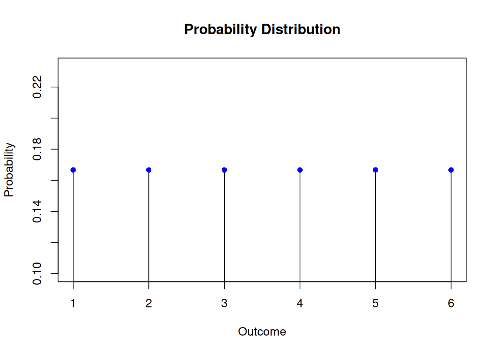
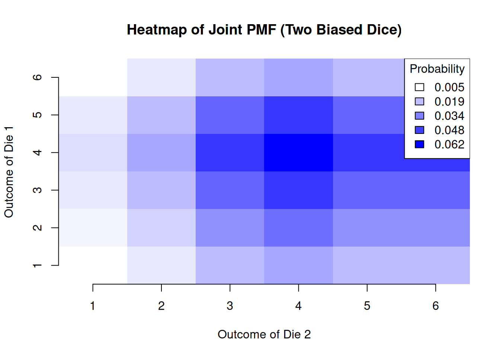

Random variables are the main mathematical tool that allows us to quantify and analyze uncertainty in Finance for complex portfolios and other financial contexts like risk management. In all of these contexts random variables provide the foundation for probabilistic reasoning.
Throughout the previous lectures, we have encountered concepts such as conditional probabilities, dependencies, and independence. These ideas have helped us build intuition for modeling uncertainty. However, as we move into more advanced applications like portfolio risk modeling and asset price dynamics, a more explicit and formal treatment of random variables becomes unavoidable.
Random variables are at the core of probability theory, serving as a bridge between real-world phenomena and mathematical models. They allow us to represent uncertain outcomes numerically and provide a framework for analyzing those outcomes using tools such as expected value, variance, and covariance. These measures are indispensable for understanding and managing financial risk. Random variables play a vital role in applications like:
Portfolio Management: Estimating the expected return and risk of a portfolio.
Risk Assessment: Modeling the probability of extreme events, such as market crashes.
Asset Pricing: Understanding how prices evolve over time using models like the binomial tree.
By the end of this lecture, you will:
Understand the definition and properties of random variables.
Learn how to compute and interpret expected value, variance, and covariance.
Apply R programming to simulate random variables and to construct a binomial tree to model asset price dynamics.
4.1 Random Variables and Distributions
A random variable is a numerical outcome of a random phenomenon. Formally, a random variable is a function that assigns a real number to each outcome in the sample space of a random experiment. More explicitly:
Definition: Random Variable
A random variable\(X\) is a function \(X:\mathcal{S} \to \mathbb{R}\) from the sample space (the set of all possible outcomes of the random experiment) to the real numbers.
A random variable is thus a function defined on the sample space of a random experiment. This formal definition allows us to generalize and analyze a wide variety of real-world scenarios. For instance:
In the coin-flipping example from Lecture 2, the number of heads in 10 flips was a random variable.
The number of multiple brithdays in a group of \(n\) people is also an example of a random variable.
By explicitly recognizing these as random variables, we can now apply a systematic framework to quantify their behavior and analyze them.
Note that it is a widely held convention in probability theory to use capital letters such as \(X\) and \(Y\) etc. as symbols of a random variable.
Random variables come in two varieties, depending on the properties of the sample space \({\cal S}\). If the sample space is a finite or countably finite set, the sample space is discrete and we talk of a discrete random variables.
Sometimes it is natural to consider continuous sample spaces. For example when we consider the return of an asset over a year or the price of a stock at a specific time. In this case we call a random variable continuous. With continuous sample spaces we will need tools from calculus. We will discuss continuous random variables in the next lecture. Here we stick with the concept of a discrete random variable.
In the case of a discrete sample space we can theoretically tabulate and random variable \(X\) by enumerating in some order all points in the sample space and associating with each the corresponding value of \(X\).
4.2 Probability Distributions and Cumulative Probability Distributions
A random variable is characterized by its probability distribution, which describes how probabilities are assigned to its possible values.
Definition: Probability Mass Function of a Discrete Random Variable
Let \(X\) be a random variable and \(x_1, x_2, ...\) the values which it assumes. The aggregate of all sample points on which \(X\) assumes a fixed value \(x_i\) is form the event \(X = x_i\). It’s probability is denoted by \(P(X = x_i)\). The function: \[\begin{equation*}
P(X = x_i) = p(x_i), \,\, i=1,2,...
\end{equation*}\] is called the probability distribution of the random variable \(X\).
We can visualize the probability distribution of a discrete random variable using R in a standard example: Consider a random variable \(X\) that represents the outcome of rolling a fair six-sided die. The probability distribution is: \(P(X = x_i) = \frac{1}{6}, \quad i = 1, 2, 3, 4, 5, 6\).
This can be visualized as:
# Plot barsplot(1:6, rep(1/6,6), type ="h", main ="Probability Distribution", xlab ="Outcome", ylab ="Probability")# Add blue filled points at the top of each barpoints(1:6, rep(1/6, 6), pch =16, col ="blue")

This plot shows that each outcome has an equal probability of \(\frac{1}{6}\) symbolized as a bar. For better readability of the graph we symbolized the function values at \(1/6\) by a blue filled dot.
Let me discuss some common confusions that arise often with understanding the concept of a random variable.
Random Variable vs. Outcome: A random variable is not the same as an individual outcome. It is a function that assigns values to outcomes. The confusion is partially created by the name. Maybe a better term would be a random mapping. Anyway, keep in mind that a random variable is a function defined on the sample space.
Probability Distribution vs. Histogram: A probability distribution represents theoretical probabilities. Don’t mix this concept up with the concept of a histogram, known from statistics and data analysis, which shows frequencies of empirical data.
Discrete vs. Continuous: Discrete variables take specific values (e.g., dice outcomes), while continuous variables can take any value in a range. Dealing with continuous variables needs specifc tools which we discuss in lecture 5.
Now You Try: Other Examples
Think of scenarios where you could define a discrete random variable.
For instance:
The number of defective products in a batch of 20.
The number of rainy days in a week.
Simulate and visualize the Probability distribution of these examples in R. You can take the visualization approach we took here. You could also try to make use of R’s barplot() function.
A related concept to the probability distribution, is the cumulative distribution function (CDF). It can also be used to describe a discrete random variable. The CDF provides the probability that the random variable \(X\) takes a value less than or equal to a specific value \(x\):
Definition: Cumulative Distribution Function (CDF)
The cumulative distribution function - abbreviated CDF - shows the probability that a random variable \(X\) take a value less than or equal to a given value \(x_i\). It is usually denoted as \(F(x_i) = P(X \leq x_i)\) where \(F\) is non-decreasing and \(0 \leq F(x_i) \leq 1\) for \(i = 1,2,...\)
In the case of a discrete random variable the cumulative distribution function (CDF) is a step function, increasing by jump discontinuities. The points where the jumps occur are exactly at the values the random variable can take.
The CDF, \(F(x)\), can be computed in this case as:
The CDF can be visualized as a step function, showing the cumulative probabilities:
x <-1:6cdf <-cumsum(rep(1/6, 6))# Plot the empty plot frameplot(0:6, c(0, cdf), type ="n", main ="Cumulative Distribution Function", xlab ="Outcome", ylab ="F(x)", xlim =c(0, 6.5), ylim =c(0, 1))# Draw the first horizontal barsegments(0, 0, 1, 0, col ="blue", lwd =2)points(0, 0, pch =16, col ="blue") # Closed circle at (0, 0)points(1, 0, pch =1, col ="blue", cex =1.2) # Open circle at (1, 0)# Draw the stepwise CDFfor (i in1:(length(x) -1)) {# Draw the horizontal bar for each stepsegments(x[i], cdf[i], x[i +1], cdf[i], col ="blue", lwd =2)# Add the closed circle at the start of the segmentpoints(x[i], cdf[i], pch =16, col ="blue") # Filled circle# Add the open circle at the end of the segmentpoints(x[i +1], cdf[i], pch =1, col ="blue", cex =1.2) # Open circle}# Draw the last horizontal bar and closed circle at the endsegments(6, cdf[6], 6.5, cdf[6], col ="blue", lwd =2)points(6, cdf[6], pch =16, col ="blue") # Closed circle at (6, 1)
A Remark on Constructing Complex Graphs in R
This visualization of the cumulative distribution function (CDF) is a great example of how graphs in R can be constructed step by step using layers and overlays. Let’s break it down to understand how the graph is built:
We start with a blank canvas and create an empty plot frame using plot() with type = "n". The type = "n" argument ensures that no points or lines are drawn initially, allowing us to control exactly what is added to the plot later. This blank canvas defines the axes, labels, and range, providing a foundation for the layers to come.
The first horizontal line is drawn using segments(), starting from (0, 0) to (1, 0). We add a filled circle (pch = 16) at the start (0, 0) and an open circle (pch = 1) at the end (1, 0) using points(). This step visually initializes the CDF at the correct starting point.
Each step of the CDF is added one at a time using a loop. For each step: - A horizontal line is drawn to represent the constant value of the CDF over that interval. - A closed circle is placed at the beginning of the line to indicate that the value is included in the CDF at that point. - An open circle is added at the end to show that the value is not included yet, highlighting the jump discontinuity.
The final horizontal line is added separately to show the end of the CDF. A closed circle is placed at the end of the last step to signify the inclusion of the final value in the distribution.
Here are some key points to keep in mind when working with cumulative distribution functions (CDFs):
The CDF gives cumulative probabilities (\(P(X \leq x)\)), not individual probabilities.
The CDF is always non-decreasing and reaches 1 for the largest possible value of \(X\).
The CDF for discrete variables is a step-function with jumps at the values the random variable can take.
The concepts of a probability distribution function and cumulative distribution function (CDF) can be extended to more than one random variable. When working with multiple random variables, we are often interested in their joint distribution, which describes how they behave together, and conditional distributions, which describe how one variable behaves given specific information about another. I discuss here the generalization to two random variables. All of the following discussion generalizes to more than two random variables.
Joint Probability Distribution
Consider now two discrete random variables \(X\) and \(Y\) defined on the same sample space and let \(x_1,x_2, ...\) and \(y_1,y_2,...\) the values which they assume. Let \(f(x_i)\) and \(g(y_j)\) be the corresponding distribution functions. The aggregate of points in which the two condistions \(X=x_i\) and \(Y=y_j\) are satisfied forms an event whose probability is denoted by \[P(X = x_i, Y = y_j) = p(x_i, y_j), \,\, i,j,=1,2,...\] is called the joint probability distribution of \(X\) and \(Y\). where \(p(x_i, y_j)\) satisfies:
\(\sum_{i,j} p(x_i, y_j) = 1\) for \(i,j=1,2,...\)..
Let me give an example: Imagine rolling two fair six-sided dice. Let \(X\) and \(Y\) represent the outcomes of the first and second dice, respectively. The joint PMF is: \[P(X = x_i, Y = y_j) = \frac{1}{36}, \quad x_i, y_j = 1, 2, 3, 4, 5, 6.\]
This joint probability distribution captures the probability of every possible pair of outcomes, such as \((X = 2, Y = 5)\).
One visualization tool for two dimensional probability distributions the heatmap. The \(x\) and \(y\) axis of the heat map symbolized the values of \(X\) and \(Y\) whereas the third dimension visualizes the probability of each pair of values \((x_i,y_j)\) by a color code. So, for example when the dice are fair we should have a probability of \(1/36\) for each basic outcome, so you should see only one uniform color.
To illustrate this visualization concept, imagine an example where the dice are biased and not fair, so the probabilities of outcomes can differ:
# Define the outcomes and probabilities for two biased diceoutcomes <-1:6prob_die1 <-c(0.05, 0.1, 0.2, 0.25, 0.2, 0.2) # Probabilities for die 1prob_die2 <-c(0.1, 0.15, 0.2, 0.25, 0.2, 0.1) # Probabilities for die 2# Compute the joint PMF as the outer product of the two probability vectorsjoint_pmf <-outer(prob_die1, prob_die2)# Create a heatmap using the image() functionimage(1:6, 1:6, joint_pmf,col =colorRampPalette(c("white", "blue"))(100),xlab ="Outcome of Die 2",ylab ="Outcome of Die 1",main ="Heatmap of Joint PMF (Two Biased Dice)",axes =FALSE)# Add axis labelsaxis(1, at =1:6, labels = outcomes)axis(2, at =1:6, labels = outcomes)# Add a color legendlegend("topright", legend =round(seq(min(joint_pmf), max(joint_pmf), length.out =5), 3),fill =colorRampPalette(c("white", "blue"))(5),title ="Probability")

Here you see immediately that something is fishy with the dice. Would the dice be fair there should be a uniform color all over the heatmap with a color at the value of \(1/36\) or \(0.03\). Try it!
With this notation we can also define the notion of a conditional probability for discrete random variables.
Definition: Conditional Probability
The conditional probability of an event \(Y=y_j\), given \(X=x_i\) with \(f(x_i) > 0\) is defined as \[
P(Y = y_j | X = x_i) = \frac{p(x_i,y_j)}{f(x_i)}
\]
In this way a number is associated with every value of \(X\) and so defines a function on \(X\). This function is called
Definition: Conditional Distribution
The conditional distribution of \(Y\) for given \(X\) and denoted by \[
P(Y = y_j|X)
\]
Let’s note a few improtant points about conditional distributions:
In general, the conditional probability distribution of \(Y\) given \(X = x_i\) (denoted \(p(y_j \mid x_i)\)) differs from the marginal probability distribution \(g(y_j)\). This means that knowing the value of \(X\) provides information about \(Y\), which indicates stochastic dependence between \(X\) and \(Y\). The strongest form of dependence occurs when \(Y\) is a deterministic function of \(X\), i.e., \(Y = h(X)\) for some function \(h\). In this case, \(X\) completely determines \(Y\), and their relationship is entirely predictable.
On the other hand, if the joint probability distribution \(p(x_i, y_j)\) factorizes as: \[
p(x_i, y_j) = f(x_i) g(y_j) \quad \text{for all pairs } (x_i, y_j),
\] then \(X\) and \(Y\) are independent. This implies that the occurrence of one event (e.g., \(X = x_i\)) has no influence on the probability of the other (e.g., \(Y = y_j\)). The joint distribution in this case takes the form of a multiplication table, where the probabilities are products of the marginal probabilities. When \(X\) and \(Y\) are independent, their interaction is minimal, and no inference can be drawn about one variable from the other.
The joint distribution \(p(x_i, y_j)\) uniquely determines the marginal distributions \(f(x_i)\) and \(g(y_j)\), as these can be computed by summing over the appropriate dimensions: \[
f(x_i) = \sum_j p(x_i, y_j), \quad g(y_j) = \sum_i p(x_i, y_j).
\] However, the reverse is not true: the marginal distributions \(f(x_i)\) and \(g(y_j)\) alone do not determine the joint distribution \(p(x_i, y_j)\). For example, different joint distributions can have the same marginals but encode different types of dependence or independence between \(X\) and \(Y\).
Note that two random variables \(X\) and \(Y\) can have the same marginal distribution \(f(x_i) = g(y_j)\) but may or may not be independent. For instance:
If \(X\) and \(Y\) are independent, their joint distribution will factorize as described earlier.
If \(X\) and \(Y\) are dependent, their joint distribution will include nontrivial interactions between the variables.
At this stage it might be a good idea to recall the example on structured finance from lecture 3. The random variables hidden in this example are default indicators \(X\) for bond 1 and \(Y\) with \(X: \{D,N\} \mapsto \{0,1\}\) and \(Y: \{D,N\} \mapsto \{0,1\}\)
In the case of independence we had a contingency table like this:
Code
# Marginal probabilities for B_1P_N <-0.9# Probability that B_1 does not defaultP_D <-0.1# Probability that B_1 defaults# Conditional probabilities for B_2 given B_1P_N_given_N <-0.81# Probability that B_2 does not default given B_1 does not defaultP_D_given_N <-0.09# Probability that B_2 defaults given B_1 does not defaultP_N_given_D <-0.09# Probability that B_2 does not default given B_1 defaultsP_D_given_D <-0.01# Probability that B_2 defaults given B_1 defaults# Load necessary librarylibrary(kableExtra)# Define marginal probabilitiesP_N_total <- P_NP_D_total <- P_DP_N_given_total <-round(P_N_given_N + P_D_given_N,2)P_D_given_total <-round(P_N_given_D + P_D_given_D,2)# Create the contingency tablecontingency_table <-matrix(c( P_D_given_D, P_D_given_N, P_D_total, # Row 1: Bond 1 Default P_N_given_D, P_N_given_N, P_N_total, # Row 2: Bond 1 No Default P_D_given_total, P_N_given_total, 1# Row 3: Column totals ),nrow =3,byrow =TRUE,dimnames =list(c("Bond 1: Default (D)", "Bond 1: No Default (N)", "Total"),c("Bond 2: Default (D)", "Bond 2: No Default (N)", "Total") ))# Create a styled tablekable_output <- knitr::kable( contingency_table,caption ="Contingency Table of Joint and Marginal Probabilities: Independence",format ="html",escape =FALSE,col.names =c("", "Default (D)", "No Default (N)", "Total")) %>% kableExtra::column_spec(1, bold =TRUE)# Render the tablekable_output
Contingency Table of Joint and Marginal Probabilities: Independence
Default (D)
No Default (N)
Total
Bond 1: Default (D)
0.01
0.09
0.1
Bond 1: No Default (N)
0.09
0.81
0.9
Total
0.10
0.90
1.0
The joint probabilities in this case are just the product of the marginal probabilities and the contingency table is similar to a multiplication table.
In the case of dependence this case changes. The new contingency table now looks like this:
Code
# Load necessary librarylibrary(kableExtra)# Updated values from the tableP_D_given_D <-0.06# Probability that Y defaults given X defaultsP_N_given_D <-0.04# Probability that Y does not default given X defaultsP_D_given_N <-0.04# Probability that Y defaults given X does not defaultP_N_given_N <-0.86# Probability that Y does not default given X does not defaultP_D_total <-0.1# Marginal probability that Y defaultsP_N_total <-0.9# Marginal probability that Y does not default# Define totalsP_D_given_total <- P_D_given_D + P_D_given_NP_N_given_total <- P_N_given_D + P_N_given_N# Create the contingency tablecontingency_table <-matrix(c( P_D_given_D, P_D_given_N, P_D_total, # Row 1: X Default P_N_given_D, P_N_given_N, P_N_total, # Row 2: X No Default P_D_given_total, P_N_given_total, 1# Row 3: Column totals ),nrow =3,byrow =TRUE,dimnames =list(c("X: Default (d)", "X: No Default (n)", "Total"),c("Y: Default (d)", "Y: No Default (n)", "Total") ))# Create a styled tablekable_output <- knitr::kable( contingency_table,caption ="Contingency Table of Joint and Marginal Probabilities: Dependence",format ="html",escape =FALSE) %>% kableExtra::column_spec(1, bold =TRUE)# Render the tablekable_output
Contingency Table of Joint and Marginal Probabilities: Dependence
Y: Default (d)
Y: No Default (n)
Total
X: Default (d)
0.06
0.04
0.1
X: No Default (n)
0.04
0.86
0.9
Total
0.10
0.90
1.0
Note that in both cases the marginal probabilities look the same. So in the case of structured finance, a superficial analysis looking at each bond in isolation and assuming independence might make a fatally wrong risk asessment.
For instance, consider \(X\) and \(Y\) that both represent the outcomes of rolling two fair dice. If \(X\) and \(Y\) are independent, the joint probabilities \(p(x_i, y_j)\) will simply be products of the marginal probabilities. However, if \(X = Y\) (e.g., the two dice always show the same value), the joint distribution will reflect perfect dependence, and \(X\) and \(Y\) are no longer independent despite having identical marginal distributions.
Here is a visualization of this situation:
# Define a joint PMF for dependent dice: one die matches the otheroutcomes <-1:6joint_pmf <-diag(1/6, 6, 6) # Probability of matching outcomes is 1/6 for each pair# Create heatmap for the dependent joint PMFimage(1:6, 1:6, joint_pmf,col =colorRampPalette(c("white", "blue"))(100),xlab ="Outcome of Die 2",ylab ="Outcome of Die 1",main ="Heatmap of Joint PMF (Dependent Dice)",axes =FALSE)axis(1, at =1:6, labels = outcomes)axis(2, at =1:6, labels = outcomes)# Add a color legendlegend("topright",legend =round(seq(min(joint_pmf), max(joint_pmf), length.out =5), 3),fill =colorRampPalette(c("white", "blue"))(5),title ="Probability")
Keep in mind:
Joint Distributions describe how two random variables behave together.
Conditional Distributions refine our understanding of one variable based on information about another.
Joint PMFs naturally generalize to describe both independent and dependent random variables. For dependent variables, the joint PMF captures the interaction and dependencies between the variables, often requiring conditional probabilities to explain the relationships.
These concepts are foundational for understanding dependencies in financial modeling, such as asset correlations or portfolio risk.
4.3 The Binomial Distribution: A Fundamental Model of Chance
In our very first lecture we modeled the flipping of a fair coin using probability theory and R. When we modeled the coin flip with R and tried to visualize, we flipped the coin many times.
Say we flip the coins 10 times. How many heads do you expect to see? What’s the likelihood of getting exactly three heads? These questions, simple yet profound, are at the heart of the binomial distribution —one of the most important and versatile models of a discrete random variable.
The binomial distribution arises whenever we repeat a simple experiment, known as a Bernoulli trial, multiple times under the same conditions. Each trial has two possible outcomes, often labeled as “success” and “failure.” By counting the number of successes in a fixed number of trials, the binomial distribution provides a complete picture of the probabilities associated with all possible outcomes.
But why is the binomial distribution so crucial? For one, it is ubiquitous in applications. From predicting election outcomes to evaluating the reliability of systems and understanding financial risks, the binomial model underpins countless real-world phenomena. More importantly, it serves as a foundational tool for understanding the behavior of discrete random variables, providing a framework to compute probabilities, analyze expectations, and quantify variability.
In this section, we’ll explore the binomial distribution in depth. We’ll derive its probability mass function, visualize its cumulative distribution function, and compute key statistics like the mean and variance. Through this concrete example, you’ll not only solidify your understanding of random variables but also gain a versatile tool for modeling uncertainty in diverse contexts.
4.4 Expected Value, Variance, and Standard Error: Understanding Random Variables
In Lecture 1, we flipped a fair coin and asked: “What’s the likelihood of heads? How many heads would we expect in multiple flips?” Now, let’s deepen our understanding by connecting these questions to key concepts in probability: expected value, variance, and standard error.
Consider a single flip of a fair coin. Let’s define a random variable \(X\), where: - \(X = 1\) if the coin lands heads (success), - \(X = 0\) if the coin lands tails (failure).
This is an example of a Bernoulli random variable, the simplest discrete random variable.
Definition: Expected value
Let \(X\) be a random variable assuming the values \(x_1,x_2,x_3, \dots\) with probabilities \(p(x_1), p(x_2), p(x_3), \dots\). The expected value of \(X\) is defined by \[
\mathbb{E}[X] = \sum_{x_i} x_i \cdot p(x_i)
\] provided the series converges absolutely. In this case, we say that \(X\) has finite expectation. If \(\sum |x_i| p(x_i)\) diverges, we say that \(X\) has no finite expectation.
It is sometimes convenient - and we have done so repeatedly in this lecture - to interpret probabilities as limits of observable frequencies in repeated, independent random experiments.
This would lead to the following intuitive interpretation of expectation. Let the experiment be repeated \(n\) times under identical conditions and denote by \(X_1,X_2,...,X_n\) the values of \(X\) that were actually observed, then for large \(n\) the average of these values should be close to \(\mathbb{E}[X]\).
While the terms mean, average and expectation are synonymous, expectation is usually used in relation to random variables, whereas mean and average is used in relation to empirical data.
Let us compute the expected value of the Bernoulli random variable \(X\): \[
\mathbb{E}[X] = 1 \cdot p + 0 \cdot (1-p) = p.
\] Thus, the expected value of \(X\) is \(p\). For a fair coin (\(p = 0.5\)), \(\mathbb{E}[X] = 0.5\). This means that in the long run, half of the flips are expected to result in heads.
While the expected value gives the central tendency, the variance quantifies the spread of a random variable’s possible outcomes around its expected value.
Definition: Expected value
Let \(X\) be a random variable assuming the values \(x_1,x_2,x_3, ...\) with probabilities \(p(x_1), p(x_2, p(x_3), ...\). The variance of \(X\) is defined by \[
\text{Var}(X) = \mathbb{E}[(X - \mathbb{E}[X])^2].
\]
For discrete random variables, this can be written as: \[
\text{Var}(X) = \sum_{x_i} (x_i - \mathbb{E}[X])^2 \cdot p(x_i).
\] Let’s look again at how this applies to the Bernoulli variable. For our Bernoulli random variable \(X\), substituting \(\mathbb{E}[X] = p\): \[
\text{Var}(X) = (1 - p)^2 \cdot p + (0 - p)^2 \cdot (1-p) = p(1-p).
\] For a fair coin (\(p = 0.5\)): \[
\text{Var}(X) = 0.5 \cdot 0.5 = 0.25.
\]
The standard error (SE) is the square root of the variance: \[
\text{SE}(X) = \sqrt{\text{Var}(X)}.
\] For our fair coin: \[
\text{SE}(X) = \sqrt{0.25} = 0.5.
\] The standard error is often more convenient than the variance because it is expressed in the same units as the expected value. It thus gives as a clear sense how much the random variable is spread around the mean in the units of the mean. Here is an example.
Suppose a stock’s daily return, \(X\), is modeled as a random variable with an expected return of 0.002 (0.2%) and a variance of \(\text{Var}(X)=0.0004\) (0.04%). The variance is expressed in squared units of the return. While mathematically precise, it is not immediately interpretable because we don’t think of returns in squared terms. The standard error is 0.02 (2%) is expressed in the same units as the return. This tells us that daily returns typically deviate by about 2% from the expected return of 0.2%. This demonstrates why the standard error is often preferred when communicating uncertainty—it translates mathematical variability into a form that aligns with practical understanding.
4.5 Extending to the Binomial Random Variable
Now let’s build on this foundation. Suppose we flip the coin \(n\) times and count the total number of heads. This total is a binomial random variable\(X\), with parameters: - \(n\): number of trials, - \(p\): probability of heads.
Definition: Binomial Random Variable
A binomial random variable is a discrete random variable with the \(X\) with probability distribution \[
P(X = k) = \binom{n}{k} p^k (1-p)^{n-k}, \quad k = 0, 1, \dots, n,
\] where \(\binom{n}{k}\) is the number of ways to choose \(k\) successes in \(n\) trials.
The outcomes of a binomial random variable can be visualized as a binomial lattice. In the following figure Figure 4.1 we visualize the case where a coin is tossed twice.
Figure 4.1: A binomial lattice
Note that we the order of occurence of Heads and Tails does not matter. We only count how many times they occur. Therefore the sequence HT ends in the same node as TH.
We can compute its expected value and variance of a binomial random variable using what we’ve learned: \[
\mathbb{E}[X] = n \cdot p, \quad \text{Var}(X) = n \cdot p \cdot (1-p), \quad \text{SE}(X) = \sqrt{n \cdot p \cdot (1-p)}.
\] Let us briefly derive these results from the definitions:
To derive the expected value and variance of a binomial random variable \(X\), we use the definitions and properties of expectation and variance step-by-step.
A binomial random variable \(X\) represents the number of successes in \(n\)
independent trials, where each trial has:
Probability of success: \(p\),
Probability of failure: \(1 - p\).
The probability density function of \(X\) is given by: \[
P(X = k) = \binom{n}{k} p^k (1-p)^{n-k}, \quad k = 0, 1, 2, \dots, n.
\] The expected value is defined as: \[
\mathbb{E}[X] = \sum_{k=0}^n k \cdot P(X = k).
\]
Substituting: \[
\mathbb{E}[X] = \sum_{k=0}^n k \cdot \binom{n}{k} p^k (1-p)^{n-k}.
\] The binomial random variable \(X\) can be viewed as the sum of \(n\) independent Bernoulli random variables \(X_i\), where each \(X_i\) is 1 for success and 0 for failure. That is: \[
X = \sum_{i=1}^n X_i,
\] where \(\mathbb{E}[X_i] = p\).
By the linearity of expectation: \[
\mathbb{E}[X] = \mathbb{E}\left[\sum_{i=1}^n X_i\right] = \sum_{i=1}^n \mathbb{E}[X_i] = n \cdot p.
\] The variance of \(X\) is defined as: \[
\text{Var}(X) = \mathbb{E}[X^2] - (\mathbb{E}[X])^2.
\] We know \(X = \sum_{i=1}^n X_i\). Using the property of variance for independent random variables: \[
\text{Var}(X) = \text{Var}\left(\sum_{i=1}^n X_i\right) = \sum_{i=1}^n \text{Var}(X_i).
\]
For a Bernoulli random variable \(X_i\): \[
\text{Var}(X_i) = \mathbb{E}[X_i^2] - (\mathbb{E}[X_i])^2.
\]
Since \(X_i\) takes values 0 and 1: \[
X_i^2 = X_i, \quad \text{so } \mathbb{E}[X_i^2] = \mathbb{E}[X_i] = p.
\]
Thus: \[
\text{Var}(X_i) = p - p^2 = p(1-p).
\]
Now summing over all \(n\) trials: \[
\text{Var}(X) = \sum_{i=1}^n \text{Var}(X_i) = n \cdot p(1-p).
\]
To solidify these concepts, let’s compute and visualize the probability distribution of a binomial random variable for \(n = 10\), \(p = 0.5\). This shows the probabilities of obtaining 0, 1, 2, …, 10 heads.
# R Code to Compute and Plot PMFn <-20p <-0.5k <-0:npmf <-dbinom(k, size = n, prob = p)plot(k, pmf, type ="h", lwd =2, main ="PMF of Binomial(20, 0.5)",xlab ="Number of Heads (k)", ylab ="P(X = k)", col ="black")points(k, pmf, pch =19, col ="blue")
Key Observations: - The probability density function is symmetric around the expected value \(\mathbb{E}[X] = 10\) because \(p = 0.5\). - The spread is captured by the variance and standard error, with most probabilities concentrated around the mean. The standard error is 2.2
The binomial distribution shows the power and versatility of the basic coin model we introduced right at the beginning of this course. It is the basic building block of this distribution and is very powerful in modeling simple experiments and deriving key properties: - Expected value provides the long-run average. - Variance and standard error measure variability. - The PMF describes the probabilities of all possible outcomes.
These concepts form the foundation for understanding random variables and their distributions, bridging theory and real-world applications.
4.6 Covariance
When we have more than one random variable we can summarize how they vary together. The concept that does this for us is covariance. Here is the definition:
Definition: Covariance
The covaraince of two random variables \(X\) and \(Y\) is defined by \[
\text{Cov}(X,Y) = \mathbb{E}(X - \mathbb{E}[X])(Y-\mathbb{E}[Y])
\] Alternatively we can write \[
\text{Cov}(X,Y) = \mathbb{E}[XY] - \mathbb{E}[X]\mathbb{E}[Y]
\] This definition is meaningful whenever \(X\) and \(Y\) have finite variance.
Note the following key points about covariance:
-If \(\text{Cov}(X,Y)>0\): \(X\) and \(Y\) tend to increase together (positive relationship).
-If \(\text{Cov}(X,Y)<0\): \(X\) and \(Y\) tend to move in opposite directions (negative relationship).
-If \(\text{Cov}(X,Y)=0\): \(X\) and \(Y\) are linearly uncorrelated, though they may still have a nonlinear relationship.
Covariance is often referred to as a linear measure of dependence. What does this mean? Covariance quantifies how the deviations of \(X\) and \(Y\) from their respective means are aligned. If \(X\) and \(Y\) tend to deviate in the same direction (both above or below their means), the product \((X - \mathbb{E}[X])(Y - \mathbb{E}[Y])\) will typically be positive, leading to a positive covariance. Conversely, if they deviate in opposite directions, this product will typically be negative, leading to a negative covariance.
Covariance captures only linear relationships because it measures the degree to which \(X\) and \(Y\) co-vary in a straight-line manner. If \(X\) and \(Y\) are related nonlinearly (e.g., quadratic, exponential), their covariance might still be zero even though a relationship exists.
Here’s an example to visualize covariance using two binomially distributed random variables:
# Simulating two binomial random variablesset.seed(123)n <-1000X <-rbinom(n, size =10, prob =0.5) # Binomial(n=10, p=0.5)Y <- X +rbinom(n, size =10, prob =0.3) # Dependent variable# Covariancecov_xy <-cov(X, Y)# Scatterplot with regression lineplot(X, Y, main ="Scatterplot of X and Y with Regression Line",xlab ="X (Binomial Random Variable)", ylab ="Y (Dependent Variable)",pch =16, col =rgb(0.2, 0.4, 0.6, 0.6))abline(lm(Y ~ X), col ="red", lwd =2) # Add regression linelegend("topright", legend =paste("Covariance =", round(cov_xy, 2)))
Here is what this visualization shows:
The scatterplot shows the relationship between \(X\) (independent binomial variable) and \(Y\) (a dependent binomial variable).
The points are scattered around a straight line, which indicates a general linear trend. Covariance quantifies how well the variations in \(X\) align with those in \(Y\).
The red line is added to highlight the linear relationship between the two variables.
If the covariance is large (positive or negative), the points will cluster more tightly around this line, indicating a stronger linear alignment.
If covariance is close to zero, the scatterplot will show a diffuse cloud of points with no clear linear trend.
Covariance describes only the linear component of the relationship. If \(X\) and \(Y\) have a nonlinear dependency, the scatterplot may show a pattern (e.g., a curve) that the regression line and covariance fail to capture.
Covariance is not a good measure of dependence when the relationship between \(X\) and \(Y\) is nonlinear.
For example, if \(Y = X^2\), \(X\) and \(Y\) exhibit a strong quadratic relationship, but their covariance might be close to zero because the deviations \((X - \mathbb{E}[X])\) and \((Y - \mathbb{E}[Y])\) do not align linearly.
Here is again a visualization:
# Simulating a stronger nonlinear relationship with binomial random variablesset.seed(123)n <-1000X <-rbinom(n, size =10, prob =0.5) # Binomial(n=10, p=0.5)Y <- (X -5)^2# Pronounced U-shaped relationship# Covariancecov_xy <-cov(X, Y)# Scatterplot with LaTeX-style labelsplot(X, Y, main =expression("Scatterplot of "* Y == (X -5)^2),xlab =expression(X ~"(Binomial Random Variable)"),ylab =expression(Y ~"= (X - 5)^2"),pch =16, col =rgb(0.2, 0.4, 0.6, 0.6))abline(lm(Y ~ X), col ="red", lwd =2) # Add regression linelegend("topright", legend =paste("Covariance =", round(cov_xy, 2)))
To capture nonlinear dependence, measures like the mutual information or a rank correlation coefficient (e.g., Spearman’s or Kendall’s) are more appropriate.
By understanding the limitations of covariance, we can use it effectively for its intended purpose while recognizing when other tools are needed to describe more complex relationships.
4.7 Variance of the Sum of Random Variables
The variance of the sum of two random variables, \(X\) and \(Y\), is a natural place where covariance arises. Let’s explore why this happens.
For two random variables \(X\) and \(Y\), the variance of their sum is: \[
\text{Var}(X + Y) = \text{Var}(X) + \text{Var}(Y) + 2 \cdot \text{Cov}(X, Y).
\]
Why does Covariance appear here? When adding \(X\) and \(Y\), the variance accounts not only for the individual variances of \(X\) and \(Y\), but also for how they interact.
The term \(2 \cdot \text{Cov}(X, Y)\) reflects this interaction: - If \(X\) and \(Y\) are positively correlated, the variability of their sum increases. - If \(X\) and \(Y\) are negatively correlated, it decreases.
This property reflects a basic principle of insurance: Diversification reduces risk. In an insurance pool, risks (e.g., claims or losses) that are negatively correlated—or at least uncorrelated—reduce the overall variability of total claims. When risks are positively correlated (e.g., claims rise simultaneously due to shared external factors like natural disasters), the total risk increases, making diversification less effective. By managing correlation, insurers aim to stabilize payouts and maintain predictability.
Consider independent variables as a special case: If \(X\) and \(Y\) are independent, \(\text{Cov}(X, Y) = 0\), and the formula simplifies: \[
\text{Var}(X + Y) = \text{Var}(X) + \text{Var}(Y).
\]
As an example let’s go back to our previous case of tossing two coins:
Example: Two Coin Tosses: Let \(X\) and \(Y\) represent the outcomes of two coin tosses (\(X, Y = 1\) for heads, \(0\) for tails).
Case 1: Independent Tosses
Variance of each toss: \[
\text{Var}(X) = p(1-p), \quad \text{Var}(Y) = p(1-p).
\]
Covariance: \[
\text{Cov}(X, Y) = 0.
\]
Variance of the sum: \[
\text{Var}(X + Y) = \text{Var}(X) + \text{Var}(Y) = 2p(1-p).
\]
Case 2: Dependent Tosses
Suppose \(P(Y = 1 \mid X = 1) = 0.7\) and \(P(Y = 1 \mid X = 0) = 0.3\).
In this case, \(\text{Cov}(X, Y) > 0\), and the variance of \(X + Y\) increases due to the positive relationship between \(X\) and \(Y\).
These insights can be extende to more than two random variables. For a sum of \(n\) random variables \(X_1, X_2, \dots, X_n\), the variance becomes: \[
\text{Var}\left(\sum_{i=1}^n X_i\right) = \sum_{i=1}^n \text{Var}(X_i) + \sum_{i \neq j} \text{Cov}(X_i, X_j).
\] This shows how the covariances between pairs of random variables collectively influence the overall variance.
In the special case of identically independently distributed variables we get: If \(X_1, X_2, \dots, X_n\) are i.i.d.: \[
\text{Var}\left(\sum_{i=1}^n X_i\right) = n \cdot \text{Var}(X).
\] ## Example: The CAPM formula and the Role of Covariance in comparing stocks
The Capital asset pricing model (CAPM) is a simple market mode, that relates individual stock returns to the market average. The CAPM formula is given by:
The left-hand side, \(r_{jt}\), is the excess return of equity \(j\) at time \(t\). This measures the return of the asset minus a measure of the risk-free rate, which represents the return on holding low-risk debt, such as a U.S. Treasury bill. For simplicity, we will omit the risk-free rate in this explanation.
\(m_t\) is the market return, which captures the aggregate return on the market at time \(t\). A common choice when looking at US data is the S&P 500, which weights companies according to their market capitalization (the total value of their stock).
\(\epsilon_{jt}\) is an error term, a random variable that captures the part of the excess return not explained by the market return. It has the following properties:
\(\mathbb{E}[\epsilon_{jt}] = 0\), meaning it has no systematic bias.
\(\mathbb{E}[m_t \epsilon_{jt}] = 0\), meaning it is uncorrelated with the market return.
The term \(\beta_j\) in the CAPM formula reflects the sensitivity of the excess return of equity \(j\) to the market return \(m_t\). It is calculated using the covariance between the returns of the asset and the market. Specifically:
Where: - \(\text{Cov}(r_j, m)\) is the covariance between the excess return of equity \(j\) and the market return. - \(\text{Var}(m)\) is the variance of the market return.
This shows that \(\beta_j\) represents the degree to which the return of equity \(j\) moves with the market. A higher \(\beta_j\) implies that the equity’s return is more sensitive to market movements, indicating a higher systematic risk.
The CAPM formula is built on the assumption that the excess return of an asset can be linearly decomposed into:
A systematic component (\(\beta_j m_t\)), which is related to market movements.
An idiosyncratic component (\(\epsilon_{jt}\)), which is specific to the asset and uncorrelated with the market.
To estimate \(\beta_j\), consider the following relationship:
The covariance appears when analyzing the relationship between \(r_{jt}\) and \(m_t\) over time. Multiplying both sides of \(r_{jt} = \alpha_j + \beta_j m_t + \epsilon_{jt}\) by \(m_t\) and taking expectations:
The covariance explicitly links the asset’s return with the market return and determines the value of \(\beta_j\), capturing how much of the asset’s return can be attributed to systematic market risk. This makes covariance fundamental to the CAPM framework.
This simple model allows for a meaningful comparison between stocks based on their insurance properties, as well as whether the create value \(\alpha_j >0\), because the stock is providing value above what the model predicts or destroy value \(\alpha_j < 0\) because the stock provides less value than what the model predicts based on the performance of the market.
Let’s compare 20 biggest stocks from the SP500. We read their data as of January 2025 using the tidyquant() package:
library(tidyquant)# Define the tickers for the 20 biggest stocks and the S&P 500 index# Ticker-Company Mapping:# NVDA - NVIDIA Corporation# AAPL - Apple Inc.# MSFT - Microsoft Corporation# AMZN - Amazon.com, Inc.# GOOGL - Alphabet Inc. (Class A)# META - Meta Platforms, Inc.# TSLA - Tesla, Inc.# UNH - UnitedHealth Group Incorporated# JNJ - Johnson & Johnson# V - Visa Inc.# XOM - Exxon Mobil Corporation# JPM - JPMorgan Chase & Co.# WMT - Walmart Inc.# MA - Mastercard Incorporated# PG - Procter & Gamble Company# HD - The Home Depot, Inc.# BAC - Bank of America Corporation# CVX - Chevron Corporation# LLY - Eli Lilly and Company# ^GSPC - S&P 500 Indextickers <-c("NVDA", "AAPL", "MSFT", "AMZN", "GOOGL", "META", "TSLA", "UNH", "JNJ", "V", "XOM", "JPM", "WMT", "MA", "PG", "HD", "BAC", "CVX", "LLY")# Add the S&P 500 index ticker (SPY is a common ETF that tracks the index)tickers <-c(tickers, "^GSPC")# Get historical data starting from 2015price_data <-tq_get( tickers, get ="stock.prices", from ="2015-01-01")
Now let’s do some definitions and data filtering first:
# Define the market ticker for the S&P 500market_ticker <-"^GSPC"# Filter the market and stock data from the previously downloaded datasetmarket_data <- price_data[price_data$symbol == market_ticker, ]stocks_data <- price_data[price_data$symbol != market_ticker, ]
Here we first assign the string ^GSPC (the Yahoo Finance ticker symbol for the S&P 500 index) to the variable market_ticker. Then we filter rows from the price_data data frame where the symbol column matches the market_ticker (^GSPC), isolating data for the S&P 500 index. The result is stored in the variable market_data, which contains historical price data for the market.
We then filter rows from the price_data data frame where the symbol column does not match ^GSPC. The result is stored in the variable stocks_data, which contains historical price data for all individual stocks (excluding the S&P 500 index).
Next we dos ome data preparation work:
# Ensure the date column is properly formattedprice_data$date <-as.Date(price_data$date)# Calculate daily returns for market and stocksreturns_data <-do.call(rbind, lapply(split(price_data, price_data$symbol), function(df) {# Convert to xts object for dailyReturn xts_data <- xts::xts(df$adjusted, order.by = df$date) df$daily_return <- quantmod::dailyReturn(xts_data, type ="log")return(df)}))# Separate market and stock returnsmarket_returns <- returns_data[returns_data$symbol == market_ticker, c("date", "daily_return")]stock_returns <- returns_data[returns_data$symbol != market_ticker, ]# Merge market returns with each stock's returnsmerged_data <-merge(stock_returns, market_returns, by ="date", suffixes =c("", "_market"))
Let’s unpack this a bit:
First, we ensure the date column is properly formatted. We convert the date column in price_data to the Date format. The xts package (used for time-series analysis) requires its order.by argument to be a Date, POSIXct, or numeric value for proper time indexing.
Next we calculate daily returns for market and stocks. We
Split price_data by stock symbol. The split()function divides price_data into a list of data frames, one for each stock (or market) identified by the symbol column.
For each stock, we create an xts object using the adjusted prices (as values) and date (as the time index). The xts format is necessary for dailyReturn().
Now we are ready toc ompute the daily returns. We use the dailyReturn() function from the quantmod package to calculate log returns. Logarithmic returns are defined as: \[
r_t = \ln\left(\frac{P_t}{P_{t-1}}\right)
\] where \(P_t\) is the adjusted closing price at time \(t\). The dailyReturn() function outputs a time series of returns, which is added as a new column (daily_return) to the stock’s data frame.
We then recombine the list of modified data frames (each containing daily_return) into a single data frame, returns_data using the do.call()function.
We now split returns_data into two subsets:
market_returns: Contains only the market index returns (e.g., S&P 500).
stock_returns: Contains the returns for all individual stocks.
To Aligns the return of each stock with the corresponding market returns by their date. we use:
merge():
Combines stock_returns and market_returns based on their shared date column.
Ensures that stock and market returns are matched by the same trading day.
Suffixes:
suffixes = c("", "_market"): Adds _market to columns from market_returns in case of naming conflicts.
For example: daily_return from market_returns becomes daily_return_market.
As a final output we get merged_data which is a data frame containing:
symbol: The stock ticker.
date: The trading date.
daily_return: The stock’s daily return.
daily_return_market: The corresponding market’s daily return.
This structure is ready for regression analysis, such as fitting the CAPM.
Now we fit a CAPM model to each stock:
# Fit CAPM for each stockcapm_results <-do.call(rbind, lapply(split(merged_data, merged_data$symbol), function(df) { model <-lm(daily_return ~ daily_return_market, data = df)data.frame(symbol =unique(df$symbol),alpha =coef(model)["(Intercept)"],beta =coef(model)["daily_return_market"] )}))
This code fits the Capital Asset Pricing Model (CAPM) for each stock in the dataset and extracts the alpha (\(\alpha\)) and beta (\(\beta\)) coefficients for each stock.
We start by splitting the data by stock symbol, which results in a list of data frames, where each data frame contains the data for one specific stock.
Then we apply CAPM regression to each stock using lapply():
lm(daily_return ~ daily_return_market, data = df): Fits a linear regression model where:
daily_return is the dependent variable (stock’s excess return).
daily_return_market is the independent variable (market’s excess return).
This corresponds to the CAPM formula: \[
r_{jt} = \alpha_j + \beta_j m_t + \epsilon_{jt}
\]
The regression estimates:
\(\alpha_j\) (the intercept): The abnormal return of the stock independent of the market.
\(\beta_j\) (the slope): The sensitivity of the stock’s return to market movements.
For each stock:
The regression results are used to extract \(\alpha\) and \(\beta\).
Finally we create a data frame for each stock where
unique(df$symbol): Retrieves the stock’s ticker symbol (e.g., AAPL, GOOGL).
coef(model)["(Intercept)"]: Extracts \(\alpha_j\) (the intercept) from the regression model.
coef(model)["daily_return_market"]: Extracts \(\beta_j\) (the slope) from the regression model.
data.frame(...): Creates a data frame with three columns:
symbol: The stock ticker.
alpha: The stock’s alpha (\(\alpha_j\)).
beta: The stock’s beta (\(\beta_j\)).
Our final output is then a data frame with the CAPM regression results for all stocks, where each row contains:
symbol: The stock ticker.
alpha: The estimated (_j) (abnormal return).
beta: The estimated (_j) (market sensitivity).
Now we plot these data in a two dimensional figure, which shows the stocks in a \((\beta, \alpha)\) space.
# Plot resultsplot( capm_results$beta, capm_results$alpha,xlab ="Beta (Systematic Risk)", ylab ="Alpha (Abnormal Return)", main ="CAPM Alpha and Beta for S&P 500 Stocks",pch =19, # Circle symbolscex =1, # Uniform size for all pointscol ="blue")# Add grid linesgrid(col ="lightgray", lty ="dotted", lwd =0.8)# Add stock symbols as text labelstext( capm_results$beta, capm_results$alpha, labels = capm_results$symbol, pos =4, cex =0.7)# Add dashed lines for beta = 0 and alpha = 0abline(h =0, lty =2, col ="red", lwd =1) # Horizontal line at alpha = 0abline(v =1, lty =2, col ="red", lwd =1) # Vertical line at beta = 1
This picture immediately allows you to asess market sensitivity and arbitrage opportunities. For example over the period 2015 - 2025 bothe Amazon (AMZ) and Google (GOOGL) have similar market sensitivity (\(beta\)) but Amazon has generated much more money independent of the overall market.
Eli Lilly and Company (LLY) an American pharmaceutical company1 exhibits remarkably low market sensitivity while generating high \(\alpha\).
1 Eli Lilly and Company, doing business as Lilly, is an American multinational pharmaceutical company headquartered in Indianapolis, Indiana, with offices in 18 countries. Its products are sold in approximately 125 countries. The company was founded in 1876 by Eli Lilly, a pharmaceutical chemist and Union Army veteran of the American Civil War for whom the company was later named.
Some companies like Exxon Mobil Corporation (XOM) or Chevron Corporation (CVX) appear to have destoryed value over this period, because their \(alpha\) is negative.
Information like this can, for example, be used to to build portfolios that maximize mean returns and minimize variance in the face of uncertain future market conditions. It can also used in strategies like pairs trading, where you find two stocks with similar \(\beta\) and buy higher \(\ælpha\) while shortening the other.
This is an example where a simple property of random variables, covariance, can be used to get an intepretable model that translates raw data into information directly relevant for dcision making.
4.8 Working with the Binomial Distribution in R
R provides built-in functions for working with the binomial distribution. These functions follow a generic syntax that is consistent across many other distributions, making them powerful tools for statistical analysis. The key functions are:
d is for the probability density function The probability distribution gives the probability of observing a specific number of successes in a binomial experiment: dbinom(x, size, prob) with
x: Number of successes.
size: Number of trials (\(n\)).
prob: Probability of success (\(p\)).
p is for the cumulative distribution function
The CDF gives the probability of observing up to a certain number of successes: pbinom(x, size, prob) with
x: Upper limit of the number of successes.
size: Number of trials (\(n\)).
prob: Probability of success (\(p\)).
q is for the quantile function
The quantile function computes the smallest number of successes for which the cumulative probability exceeds a specified value: qbinom(p, size, prob) with
p: Cumulative probability.
size: Number of trials (\(n\)).
prob: Probability of success (\(p\)).
r is for random number generation
This function generates random samples from the binomial distribution: rbinom(n, size, prob) with
n: Number of random values to generate.
size: Number of trials (\(n\)).
prob: Probability of success (\(p\)).
R uses a generic accross different distributions: The d, p, q, and r prefixes used in these functions are part of a generic framework in R:
d for density/PMF.
p for cumulative probability (CDF).
q for quantiles.
r for random number generation.
This structure is consistent across other distributions in R, such as the normal (dnorm, pnorm, qnorm, rnorm) or Poisson (dpois, ppois, qpois, rpois) distributions. Understanding this generic syntax simplifies working with various probability distributions.
4.9 Programming in R: The binomial lattic model
The binomial lattice model is a simple yet powerful framework for simulating asset price dynamics under uncertainty. It is widely used in financial modeling, particularly in pricing derivative securities like options, as it captures the probabilistic nature of price movements in discrete time. At each time step, an asset can either move up or down by a specified factor, creating a lattice of possible price paths. It is an excellent application case for discrete random variables but also for an introduction to writing more complex programs in R.
In this lecture, we will apply the binomial lattice model to simulate the dynamics of a stock index which we have now used several times in this lecture: the S&P 500. This example provides a practical use case to reinforce programming concepts while exploring a key tool in financial mathematics.
You will learn how to:
Write more complex R programs, including functions for creating and exploring the lattice.
Use control structures like loops (for, while, repeat) and conditional statements (if, else).
Understand and leverage R’s powerful list structure for organizing and manipulating data.
Apply modular programming principles to write reusable, maintainable code.
By the end of this session, you’ll not only have a deeper understanding of the binomial lattice model but also the computational tools to extend this approach to more complex scenarios in financial modeling.
4.9.1 The binomial lattice model
To define the binomia lattice model, we need to establish a basic period length, say 1 week or one day. The model describes a situation where we know the price at the beginning of the period. The price at the beginning of the next period is one of only two possible values. Usually these possibilities are defined as multiples of the price in the previous period, a multiple \(u\) (for up) and \(d\) (for down). Both \(u\) and \(d\) are positive with \(u > 1\) and \(d < 1\). Hence when the price at the beginning of the period is \(S\), it will be \(uS\) or \(dS\) at the beginning of the next period. The probabilities of these outcomes are given by \(p\) and \(1-p\). This model continues for several periods.
By now you will recognize that the outcomes of this model will be well described by a binomial random variable. The model is equivalent to tossing a coin multiple times.
This binomial lattice model is fundamentally linked to the binomial distribution. Consider the price after \(n\) periods. Each period represents a trial where the price either moves up (\(u\)) or down (\(d\)), with probabilities \(p\) and \(1−p\), respectively. The total price after \(n\) periods depends on the number of upward movements, denoted by \(k\), and is given by:
\[
S_n = S_0 \times u^k \times d^{n−k}
\]
where \(k\) is the number of “up” movements and \(n−k\) is the number of “down” movements.
The distribution of \(k\) follows a binomial distribution: \[
P(k) = \binom{n}{k} p^k (1-p)^{n-k}, \quad k = 0, 1, 2, \dots, n
\] which describes the likelihood of observing \(k\) upward movements out of \(n\) trials.
This model may seem too simplistic for describing the price dynamics of a stock index, because there are only two possible outcomes per period.
But when you make the connection to the binomial distribution you will realize how this restriction becomes less severe when \(\Delta t\) the time steps are small: the random variable \(k\), representing the count of up movements, directly determines the possible price levels of the asset. Over many periods \(n\), this simple two-step structure generates a range of prices consistent with the binomial distribution. This relationship also explains why the model becomes increasingly flexible and realistic as the number of periods grows, enabling it to approximate more complex price dynamics.
Because the model is multiplicative, the price will never become negative. We can thus work with the logarithm of the price as our fundamental variable.
Accordinglly, we define \(\nu\) as the expected annual growth rate \[
\nu = \mathbb[\ln(S_T/S_0)]
\] where \(S_0\) is the initial stock price and \(S_T\) is the price at the end of the year. Likewise we define the variance as \[
\sigma^2=\text{var}[\ln(S_T/S_0)]
\]
If the period length \(\Delta t\) is chosen small compared to 1, the parameters of the binomial lattice can be selected as: \[\begin{eqnarray}
p &=& \frac{1}{2} + \frac{1}{2}\left(\frac{\nu}{\sigma}\right) \sqrt{\Delta t} \\
u &=& \exp(\sigma \sqrt{\Delta t}) \\
d &=& \exp(- \sigma \sqrt{\Delta t})
\end{eqnarray}\]
This means - for instance - that if \(\Delta t\) is one week the time scaling factor would be \(\sqrt{1/52}\) if it is a day it would be \(\sqrt{1/252}\) assuming 252 trading days in a year.
4.9.2 Modelling the Dynamics of the SP500
4.9.2.1 Calibrating the model paraemters from data
As a use case we make a model which we calibrate to the SP500, a broad stock market index that we have used already before in our lectures. Let#s get the S&P data using the tidyquantpackage:
# Load necessary librarieslibrary(tidyquant)
We start by retrieving the data first. I use the SP500 ticker symbol ^GSPC here. You could also use SPY which is an ETF tracking the SP500.
# Retrieve S&P 500 data (adjust ticker as needed)sp500_data <-tq_get("SPY", from ="2000-01-01", to ="2025-01-01", get ="stock.prices")# Extract adjusted prices and datesdates <- sp500_data$dateadjusted_prices <- sp500_data$adjusted# Find the first trading day of each yearyears <-unique(format(dates, "%Y")) # Extract unique yearsannual_indices <-sapply(years, function(year) {which(format(dates, "%Y") == year)[1] # Get the first trading day of the year})# Extract prices and dates for the first trading day of each yearannual_prices <- adjusted_prices[annual_indices]annual_dates <- dates[annual_indices]
Let me unpack this code-chunk a bit, especially focusing on how we use R to extract the first trading day in each year.
This snippet of R code retrieves stock price data for the S&P 500 (or a similar asset) and identifies the first trading day of each year in the data.
Below is a step-by-step breakdown with a focus on the sapply function, which plays a key role in identifying these days.
We first retrieve S&P 500 Data using the tq_get()function from the tidyquant package. We have done such and similar retrievals before, so I need not further comment on the details here. The result, sp500_data, is a data frame containing columns like date, adjusted (adjusted closing price), and others.
In a next step we extract the relevant columns Here: - dates is a vector of all the trading dates in the dataset. - adjusted_prices is a vector of the adjusted closing prices for those dates.
Now comes our key step, extracting unique years from the dataframe which stores daily stock prices.
years <-unique(format(dates, "%Y"))
The format(dates, "%Y") function converts each date into a 4-digit year (e.g., “2000”, “2001”). The unique() function ensures that only one instance of each year remains. The result is a vector of distinct years present in the dataset.
Now we want to identify the first trading day of each year
To understand this code understanding sapply is key. The sapply function applies a user-defined function over each element of a vector (years in this case) and simplifies the result into a vector. Think of it as a way to loop through each year and calculate something for it.
The function inside sapply does the following for each year in years:
format(dates, "%Y") == year creates a logical vector that checks which dates in dates belong to the current year.
which(...)[1] finds the indices of TRUE values in the logical vector and selects the first one. This corresponds to the first trading day of the year.
The annual_indices vector contains the indices in dates that correspond to the first trading day of each year.
Now we can extract first trading day prices and dates
annual_prices holds the adjusted prices for the first trading day of each year.
annual_dates holds the corresponding dates.
Here’s why sapply is powerful:
Iterates Over Elements: It goes through each year in the years vector without requiring an explicit for loop.
Applies a Function: It applies the provided anonymous function to each year. In this case, the function finds the first trading day’s index for the current year.
Simplifies the Output: Unlike lapply (which returns a list), sapply returns a vector, making it easier to work with when you need a simple result like indices.
Why Use sapply Instead of a Loop? While a for loop could achieve the same result, sapply is:
More concise: You don’t need to explicitly initialize an output vector or update it manually.
Readable: It clearly expresses the idea of applying a function to each element of years.
In terms of R programming this part of our code holds some key messages fro you:
sapply Simplifies Iterations: It’s a useful tool when you want to apply a function to a vector or list and return a simplified result.
Logical Indexing with which: The combination of which and logical conditions (format(dates, "%Y") == year) is a common way to find specific indices in R.
Chaining Steps Together: This code demonstrates how small functions like format, which, and sapply can be combined to perform complex tasks efficiently.
Now let us go on in our task of modelling the SP500 using the binomial lattice model. We comute the log returns in a next step and do the calibration. Not much exciting new things are going on here in terms of R. This code-part should be straightformward.
# Compute annual log returnslog_returns <-diff(log(annual_prices)) # Compute log(S_T / S_0)# Combine into a data frameannual_log_returns <-data.frame(year =format(annual_dates[-1], "%Y"), # Corresponding years for log returnslog_return = log_returns)# Parameters for weekly time step (1/52 years)# Weekly time stepdelta_t <-1/52#Mean log returnnu <-mean(annual_log_returns$log_return, na.rm =TRUE)# Variancesigma_squared <-var(annual_log_returns$log_return, na.rm =TRUE) # Standard deviationsigma <-sqrt(sigma_squared) # Calibrate binomial model parametersp <-0.5+0.5* (nu / sigma) *sqrt(delta_t)u <-exp(sigma *sqrt(delta_t))d <-exp(-sigma *sqrt(delta_t))# View calibrated parametersparameters <-list(nu = nu,sigma = sigma,p = p,u = u,d = d)parameters
We retrieve a series of daily prices, extract a series of annual price changes from there and then compute the parameters and pack them into a list. The precise mathematical reason why we can calibrate the model like this and why this works, we will see in lecture 5.
4.9.2.2 Building the lattice: For loops and lookup tables.
We are now going to build the lattice. At this stage let us just take a tiny number of time steps, so we can inspect the output of what we are doing with ease. You can later play for yourself with this code and just increase the value of \(n\).
# Set the step numbern <-3# Set the starting price S0 (choose most recent price)S0 <- adjusted_prices[length(adjusted_prices)]# Initialize the lattice as a listlattice <-vector("list", n +1)# Build the latticefor (step in0:n) { prices <-numeric(step +1)for (i in0:step) { prices[i +1] <- S0 * u^i * d^(step - i) } lattice[[step +1]] <- prices}# View the latticelattice
This code snippet uses for loops and a lookup table to build a binomial lattice. Both are important concepts when writing R programs-
Let’s break it down step by step, focusing on the programming concepts involved.
A for loop in R iterates over a sequence of values, executing a block of code for each value. Its syntax is:
for (variable in sequence) {# Code to execute in each iteration}
In our code we have two loops: An outer loopfor (step in 0:n) {. This loop iterates through each step of the lattice, from 0 to n (the total number of time steps in the model). The variable step represents the current level of the lattice.
The inner loopfor (i in 0:step) {: For each level of the lattice (step), this loop iterates over the possible nodes (prices) at that level. The variable i represents the number of upward moves at this level.
A lookup table is a data structure that stores values for quick access, allowing computations to refer to pre-calculated data instead of recomputing it repeatedly.
In this example, the lattice itself is the lookup table. It stores the prices at each step and node of the lattice in a list structure:
lattice[[step +1]] <- prices
Each element of lattice corresponds to a time step. lattice[[step + 1]] stores a numeric vector containing all possible prices at the step level of the lattice.
Now here’s how the code uses for loops and a lookup table to build the binomial lattice:
We first initialize the lattice by lattice <- vector("list", n + 1). A list of size n + 1 is created to store the prices for each step of the lattice (from step 0 to step n). Lists are ideal here because they allow each element to store a vector of prices, with the number of prices varying at each step.
Pre-allocating space for the output is good practice when writing for loops in R (or any other programming language) because it significantly improves performance and readability. Here’s why: It avoids repeated memory allocation: If you grow an object inside a loop (e.g., using c() to append values), R reallocates memory every time the object changes size. This is computationally expensive, especially for large loops.
By pre-allocating the required space, memory is allocated only once, and the values are directly written into the reserved space, saving computation time.
Pre-allocation makes the structure of the output clear before the loop begins and improves code readability. Readers can immediately understand the size and type of the expected result.
Finally it avoids unnecessary complexity: Growing objects dynamically can make the code harder to follow and debug.
Pre-allocation ensures better performance and cleaner, more professional code!
Let’s look a bit closer into what our loops do:
The Outer Loop iterates over each step of the lattice. At each step, a new vector prices is created to store the prices for that level.
The Inner Loop computes the price for each node at the current step. For node i, the price is calculated using: \[
S_i = S_0 \cdot u^i \cdot d^{\text{step} - i}
\] The result is stored in the prices vector, with indices adjusted for R’s 1-based indexing (i + 1).
After computing all prices for the current step, the prices vector is added to the lattice lookup table at index step + 1.
The final lattice contains all possible prices at each step, structured as a list: - lattice[[1]]: Prices at step 0 (initial price, S0). - lattice[[2]]: Prices at step 1 (two possible prices: up and down). - And so on, up to lattice[[n + 1]].
Let us visualize the lattice. This, of course, only makes sense for small nubers of time steps because the lattice grows rapidly as the time steps get bigger. For our visualization here I use the ggplot2 library, a great library for visualization of all kinds with a consistent “grammar of graphics”.
Let us prepare the data for our plot first:
# Prepare data for plottingplot_data <-data.frame(Step =rep(0:n, times =seq_len(n +1)), # x-coordinatesPrice =unlist(lattice), # y-coordinatesLabel =round(unlist(lattice), 2) # Labels with rounded prices)# Create edges for connectionsedges <-do.call(rbind, lapply(1:n, function(step) {data.frame(x =rep(step -1, times = step), # Starting x-coordinatesxend =rep(step, times = step), # Ending x-coordinatesy = lattice[[step]], # Starting y-coordinatesyend =c(lattice[[step +1]][-1], lattice[[step +1]][-length(lattice[[step +1]])]) # Ending y-coordinates )}))
This part of the code needs some explanation:
The code prepares two main components: data for plotting the nodes (prices at each step) and data for connecting those nodes with edges (showing transitions between prices).
To prepare the nodes, we create a data.frame for the lattice’s nodes, which represent the prices at each step in the lattice.
Step (x-coordinates):
rep(0:n, times = seq_len(n + 1)) creates a vector repeating each step number (0:n) a specific number of times.
seq_len(n + 1) generates the sequence of repetitions: 1, 2, 3, ..., n + 1. This ensures that:
At step 0, there’s 1 node.
At step 1, there are 2 nodes.
At step 2, there are 3 nodes, and so on.
Example for n = 2: Step = c(0, 1, 1, 2, 2, 2).
Price (y-coordinates):
unlist(lattice) flattens the list lattice into a single vector.
lattice is assumed to be a list where each element corresponds to the prices (y-coordinates) at a specific step in the lattice.
For instance, if lattice = list(c(100), c(110, 90), c(121, 100, 81)), then unlist(lattice) produces c(100, 110, 90, 121, 100, 81).
Label:
round(unlist(lattice), 2) creates rounded labels for the prices, suitable for display in a plot.
The resulting data.frame contains three columns:
Step: The x-coordinate (time step).
Price: The y-coordinate (price value).
Label: Rounded price values for display.
To create the edges we need to prepare the connections between nodes, which represent the transitions between prices at consecutive steps. Here is what is going on
Outer Loop with lapply:
Loops over each step (1:n) in the lattice. For each step:
Connections are created between the nodes at the current step (step - 1) and the next step (step).
Starting Coordinates (x, y):
x: rep(step - 1, times = step) sets the starting x-coordinate for all connections at step step.
E.g., for step 1, x = rep(0, 1); for step 2, x = rep(1, 2).
y: lattice[[step]] provides the y-coordinates (prices) of the starting nodes.
Ending Coordinates (xend, yend):
xend: rep(step, times = step) sets the ending x-coordinate for all connections at the next step.
yend: The tricky part! It selects the y-coordinates of the ending nodes:
lattice[[step + 1]][-1]: Removes the first price at the next step.
lattice[[step + 1]][-length(lattice[[step + 1]])]: Removes the last price at the next step.
Combined using c(...) to connect prices at step step to both upward and downward transitions at step step + 1.
do.call(rbind, ...):
Combines all the individual data.frame objects (one per step) into a single data.frame with the connection data.
The resulting edgesdata.frame has four columns:
x: Starting x-coordinates.
xend: Ending x-coordinates.
y: Starting y-coordinates.
yend: Ending y-coordinates.
This is a good opprotubity for understanding lapply and do.call:
lapply applies a function to each element of a sequence (steps here) and returns a list of results.
do.call(rbind, ...) merges the list of data.frames into a single data.frame.
Now we can do our visualization:
# load ggplot2 librarylibrary(ggplot2)# Plotggplot() +# Add edgesgeom_segment(data = edges, aes(x = x, y = y, xend = xend, yend = yend),color ="gray", linetype ="dashed") +# Add nodesgeom_point(data = plot_data, aes(x = Step, y = Price), color ="blue", size =2) +# Add price labelsgeom_text(data = plot_data, aes(x = Step, y = Price, label = Label),color ="black", vjust =-0.5, size =3) +labs(title ="Enriched Binomial Lattice with Prices for S&P 500",x ="Step", y ="Price") +theme_minimal()
Before we go through the syntax of this code snippet let me first briefly introduce you to the logic of ggplot2
The ggplot2 package is one of the most popular tools in R for creating visualizations. It uses a layered grammar of graphics, which means you build a plot step-by-step by adding layers. Each layer corresponds to a specific aspect of the visualization, such as:
The Data: Define the dataset you want to visualize.
Aesthetic Mappings (aes): Specify how variables in your data map to visual properties (e.g., x/y positions, colors, sizes).
Geometries (geom_): Add geometric objects like points, lines, or bars to represent the data visually.
Themes and Labels: Customize the look of the plot (theme) and annotate it with titles, axis labels, etc.
With this understanding, let’s break down the provided code.
4.9.3 The Code: Building a Binomial Lattice Plot
We first create a plot base through ggplot() +:
This initializes an empty plot. The ggplot() function can take a dataset as its argument, but in this case, it’s left empty because the plot will use multiple datasets (edges and plot_data) added in later layers.
In the next step we add edges by
geom_segment(data = edges, aes(x = x, y = y, xend = xend, yend = yend),color ="gray", linetype ="dashed") +
geom_segment: This geometry adds line segments (edges) to the plot. Each segment connects a starting point (x, y) to an ending point (xend, yend).
data = edges: Specifies that this layer uses the edges dataset, which contains the start and end coordinates of each edge.
aes(x = x, y = y, xend = xend, yend = yend): Maps the start (x, y) and end (xend, yend) points for the edges from the edges dataset.
Styling:
color = "gray" makes the edges gray.
linetype = "dashed" creates dashed lines to distinguish the edges visually.
Now we add nodes by evoking:
geom_point(data = plot_data, aes(x = Step, y = Price), color ="blue", size =2) +
geom_point: This geometry adds points (nodes) to the plot.
data = plot_data: Specifies the dataset containing node information.
aes(x = Step, y = Price): Maps the Step (x-axis) and Price (y-axis) variables from the plot_data dataset.
Styling:
color = "blue" sets the points’ color.
size = 2 adjusts the size of the points to make them visible but not overpowering.
geom_text: This geometry adds text labels to the plot.
data = plot_data: Uses the same dataset as the nodes, since labels correspond to the nodes.
aes(x = Step, y = Price, label = Label):
x = Step and y = Price position the labels at the nodes.
label = Label specifies the text to display, which is the rounded price values from the Label column.
Styling:
color = "black" sets the text color.
vjust = -0.5 adjusts the vertical alignment of the labels so they appear slightly above the nodes.
size = 3 adjusts the font size.
Finally we define the plot lables and add the minimaltheme from the library of themes provided by ggplot2.
The resulting plot will look like:
A binomial lattice with:
Dashed gray edges connecting nodes, representing the upward and downward transitions.
Blue points for each node in the lattice, representing prices at different steps.
Black text labels above the nodes, displaying the rounded price values.
A clean and minimal design with a title and labeled axes.
This code demonstrates how to layer multiple datasets (nodes and edges) in a single visualization using ggplot2. By carefully controlling each layer and its aesthetic mappings, you can create complex and informative visualizations.
4.9.3.1 Exploring the Lattice: Flow Control
We can now use our lattice to demonstrate some other R programing tools. Let us explore the lattice by using whileloops to traverse the lattice and compute specific properties (e.g., maximum or minimum price).
# Traverse lattice to find maximum pricemax_price <--Infstep <-1while (step <=length(lattice)) { max_price <-max(max_price, max(lattice[[step]])) step <- step +1}max_price
[1] 630.8218
This code traverses through a binomial lattice (stored as a list of price vectors) to find the maximum price across all steps. Along the way, it introduces the concept of an R while loop, which is a fundamental control structure used for iterative computations.
We first initialize the variables max_price and step-
max_price: This variable keeps track of the maximum price found so far.
It is initialized to -Inf (negative infinity) because any price in the lattice will be greater than this value, ensuring the first price comparison updates it.
step: This variable represents the current step (or level) of the lattice being processed. It starts at 1 to access the first step in the lattice.
In R, Inf (infinity) and -Inf (negative infinity) are special numeric constants that represent values beyond the largest or smallest numbers R can handle. They are used in mathematical operations and comparisons where results exceed the limits of finite numbers.
Inf is larger than any finite number, and -Inf is smaller than any finite number. Inf and -Inf are commonly used as initial values in iterative algorithms. For example:
max_price <- -Inf ensures any number compared to it will update the value.
min_price <- Inf works similarly for finding the smallest value.
After this short excursion into Inf and -Inf in R we now come to the step where we transverse the lattice using a whileloop.
A while loop repeats a block of code as long as the condition remains TRUE.
It’s useful when the number of iterations isn’t predetermined and depends on a condition being met.
Here’s how it works in this snippet:
Condition (step <= length(lattice)):
The loop continues as long as step is less than or equal to the number of steps in the lattice (length(lattice)).
This ensures every level of the lattice is checked.
Update Maximum Price:
max_price <-max(max_price, max(lattice[[step]]))
lattice[[step]]: Accesses the vector of prices at the current step.
max(lattice[[step]]): Finds the maximum price at the current step.
max(max_price, ...): Updates max_price with the larger value between the current max_price and the maximum price at the current step.
The expression step <- step + 1 is the so called **increment step: After processing the current step, the step variable is increased by 1 to move to the next step in the lattice.
After the loop completes, max_price contains the maximum price found across all steps of the lattice.
The General Structure of a while Loop: is:
while (condition) {# Code block to execute }
The loop runs as long as the condition evaluates to TRUE.
You must ensure the condition eventually becomes FALSE; otherwise, the loop will run indefinitely (infinite loop).
The key Features in our example:
Initialization: Variables (max_price, step) are set up before the loop.
Condition Check: The loop continues as long as step <= length(lattice).
Update Mechanism: Both max_price and step are updated within the loop, ensuring progress toward termination.
The common use case for while loops are:
When the number of iterations isn’t known beforehand (e.g., processing until a condition is met).
Traversing a list or dataset, as in this example.
It is best practice to:
Always ensure the condition can eventually become FALSE.
Use print or cat statements inside the loop to debug and see intermediate results.
4.9.3.2 Does the price exceed a threshold?: Conditional statements to annotate whether a price exceeds a certain threshold.
Let’s consider next this codes snippet. It helps us finding out whether a price in the lattice exceeds a particular threshold. This is a question you will ask yourself often when analyzing options, for example.
This code snippet traverses the binomial lattice (stored as a list of price vectors) to identify and print prices exceeding a given threshold (4100). It uses nested for loops to navigate through the lattice and an if conditional statement to check whether each price exceeds the threshold.
In the beginning we define our threshold by threshold <- 4100. Any price greater than this value will trigger a message.
We have an outer loop
for (step in0:n) {
The for loop iterates over the steps of the lattice, from 0 (the initial step) to n (the final step).
Each step represents a time period or level in the lattice.
We also have an inner loop to traverse prices within each step, which is in the code segment
for (i inseq_along(lattice[[step +1]])) {
lattice[[step + 1]]:
Accesses the list element for the current step (step + 1 because R uses 1-based indexing).
This element is a vector of prices at the given step.
seq_along(...):
Creates a sequence from 1 to the length of lattice[[step + 1]].
This ensures that every price in the current step is checked.
The i variable is the index of a price in the vector lattice[[step + 1]].
Now comes a new concept: A conditional statement to check the threshold:
if (lattice[[step +1]][i] > threshold) {print(paste("Price exceeds threshold at step", step, ":", lattice[[step +1]][i]))}
Let me explain the syntax of the if statment in R:
Condition:lattice[[step + 1]][i] > threshold
Checks whether the price at index i in the current step is greater than the threshold.
If the condition evaluates to TRUE:
Executes the code inside the curly braces {...}.
In this case, it prints a message containing:
The step number.
The price (lattice[[step + 1]][i]) that exceeds the threshold.
When Condition is FALSE: If the condition evaluates to FALSE (price does not exceed the threshold), the code inside the braces is skipped.
The general structure of an if statement in R is
if (condition) {# Code to execute if condition is TRUE}
condition:
A logical expression that evaluates to TRUE or FALSE.
Can involve comparisons (>, <, ==, !=, etc.), logical operators (&, |, !), or built-in R functions.
If the condition is TRUE, the code block inside {} is executed.
If the condition is FALSE, the code block is skipped.
You always have the option to extend a conditional statement by an else block:
if (condition) {# Code to execute if condition is TRUE} else {# Code to execute if condition is FALSE}
4.10 Programming in R: The binomial lattic model
The binomial lattice model is a simple yet powerful framework for simulating asset price dynamics under uncertainty. It is widely used in financial modeling, particularly in pricing derivative securities like options, as it captures the probabilistic nature of price movements in discrete time. At each time step, an asset can either move up or down by a specified factor, creating a lattice of possible price paths. It is an excellent application case for discrete random variables but also for an introduction to writing more complex programs in R.
In this lecture, we will apply the binomial lattice model to simulate the dynamics of a stock index which we have now used several times in this lecture: the S&P 500. This example provides a practical use case to reinforce programming concepts while exploring a key tool in financial mathematics.
You will learn how to:
Write more complex R programs, including functions for creating and exploring the lattice.
Use control structures like loops (for, while, repeat) and conditional statements (if, else).
Understand and leverage R’s powerful list structure for organizing and manipulating data.
Apply modular programming principles to write reusable, maintainable code.
By the end of this session, you’ll not only have a deeper understanding of the binomial lattice model but also the computational tools to extend this approach to more complex scenarios in financial modeling.
4.10.1 The binomial lattice model
To define the binomia lattice model, we need to establish a basic period length, say 1 week or one day. The model describes a situation where we know the price at the beginning of the period. The price at the beginning of the next period is one of only two possible values. Usually these possibilities are defined as multiples of the price in the previous period, a multiple \(u\) (for up) and \(d\) (for down). Both \(u\) and \(d\) are positive with \(u > 1\) and \(d < 1\). Hence when the price at the beginning of the period is \(S\), it will be \(uS\) or \(dS\) at the beginning of the next period. The probabilities of these outcomes are given by \(p\) and \(1-p\). This model continues for several periods.
By now you will recognize that the outcomes of this model will be well described by a binomial random variable. The model is equivalent to tossing a coin multiple times.
This binomial lattice model is fundamentally linked to the binomial distribution. Consider the price after \(n\) periods. Each period represents a trial where the price either moves up (\(u\)) or down (\(d\)), with probabilities \(p\) and \(1−p\), respectively. The total price after \(n\) periods depends on the number of upward movements, denoted by \(k\), and is given by:
\[
S_n = S_0 \times u^k \times d^{n−k}
\]
where \(k\) is the number of “up” movements and \(n−k\) is the number of “down” movements.
The distribution of \(k\) follows a binomial distribution: \[
P(k) = \binom{n}{k} p^k (1-p)^{n-k}, \quad k = 0, 1, 2, \dots, n
\] which describes the likelihood of observing \(k\) upward movements out of \(n\) trials.
This model may seem too simplistic for describing the price dynamics of a stock index, because there are only two possible outcomes per period.
But when you make the connection to the binomial distribution you will realize how this restriction becomes less severe when \(\Delta t\) the time steps are small: the random variable \(k\), representing the count of up movements, directly determines the possible price levels of the asset. Over many periods \(n\), this simple two-step structure generates a range of prices consistent with the binomial distribution. This relationship also explains why the model becomes increasingly flexible and realistic as the number of periods grows, enabling it to approximate more complex price dynamics.
Because the model is multiplicative, the price will never become negative. We can thus work with the logarithm of the price as our fundamental variable.
Accordinglly, we define \(\nu\) as the expected annual growth rate \[
\nu = \mathbb[\ln(S_T/S_0)]
\] where \(S_0\) is the initial stock price and \(S_T\) is the price at the end of the year. Likewise we define the variance as \[
\sigma^2=\text{var}[\ln(S_T/S_0)]
\]
If the period length \(\Delta t\) is chosen small compared to 1, the parameters of the binomial lattice can be selected as: \[\begin{eqnarray}
p &=& \frac{1}{2} + \frac{1}{2}\left(\frac{\nu}{\sigma}\right) \sqrt{\Delta t} \\
u &=& \exp(\sigma \sqrt{\Delta t}) \\
d &=& \exp(- \sigma \sqrt{\Delta t})
\end{eqnarray}\]
This means - for instance - that if \(\Delta t\) is one week the time scaling factor would be \(\sqrt{1/52}\) if it is a day it would be \(\sqrt{1/252}\) assuming 252 trading days in a year.
4.10.2 Modelling the Dynamics of the SP500
4.10.2.1 Calibrating the model paraemters from data
As a use case we make a model which we calibrate to the SP500, a broad stock market index that we have used already before in our lectures. Let#s get the S&P data using the tidyquantpackage:
# Load necessary librarieslibrary(tidyquant)
We start by retrieving the data first. I use the SP500 ticker symbol ^GSPC here. You could also use SPY which is an ETF tracking the SP500.
# Retrieve S&P 500 data (adjust ticker as needed)sp500_data <-tq_get("SPY", from ="2000-01-01", to ="2025-01-01", get ="stock.prices")# Extract adjusted prices and datesdates <- sp500_data$dateadjusted_prices <- sp500_data$adjusted# Find the first trading day of each yearyears <-unique(format(dates, "%Y")) # Extract unique yearsannual_indices <-sapply(years, function(year) {which(format(dates, "%Y") == year)[1] # Get the first trading day of the year})# Extract prices and dates for the first trading day of each yearannual_prices <- adjusted_prices[annual_indices]annual_dates <- dates[annual_indices]
Let me unpack this code-chunk a bit, especially focusing on how we use R to extract the first trading day in each year.
This snippet of R code retrieves stock price data for the S&P 500 (or a similar asset) and identifies the first trading day of each year in the data.
Below is a step-by-step breakdown with a focus on the sapply function, which plays a key role in identifying these days.
We first retrieve S&P 500 Data using the tq_get()function from the tidyquant package. We have done such and similar retrievals before, so I need not further comment on the details here. The result, sp500_data, is a data frame containing columns like date, adjusted (adjusted closing price), and others.
In a next step we extract the relevant columns Here: - dates is a vector of all the trading dates in the dataset. - adjusted_prices is a vector of the adjusted closing prices for those dates.
Now comes our key step, extracting unique years from the dataframe which stores daily stock prices.
years <-unique(format(dates, "%Y"))
The format(dates, "%Y") function converts each date into a 4-digit year (e.g., “2000”, “2001”). The unique() function ensures that only one instance of each year remains. The result is a vector of distinct years present in the dataset.
Now we want to identify the first trading day of each year
To understand this code understanding sapply is key. The sapply function applies a user-defined function over each element of a vector (years in this case) and simplifies the result into a vector. Think of it as a way to loop through each year and calculate something for it.
The function inside sapply does the following for each year in years:
format(dates, "%Y") == year creates a logical vector that checks which dates in dates belong to the current year.
which(...)[1] finds the indices of TRUE values in the logical vector and selects the first one. This corresponds to the first trading day of the year.
The annual_indices vector contains the indices in dates that correspond to the first trading day of each year.
Now we can extract first trading day prices and dates
annual_prices holds the adjusted prices for the first trading day of each year.
annual_dates holds the corresponding dates.
Here’s why sapply is powerful:
Iterates Over Elements: It goes through each year in the years vector without requiring an explicit for loop.
Applies a Function: It applies the provided anonymous function to each year. In this case, the function finds the first trading day’s index for the current year.
Simplifies the Output: Unlike lapply (which returns a list), sapply returns a vector, making it easier to work with when you need a simple result like indices.
Why Use sapply Instead of a Loop? While a for loop could achieve the same result, sapply is:
More concise: You don’t need to explicitly initialize an output vector or update it manually.
Readable: It clearly expresses the idea of applying a function to each element of years.
In terms of R programming this part of our code holds some key messages fro you:
sapply Simplifies Iterations: It’s a useful tool when you want to apply a function to a vector or list and return a simplified result.
Logical Indexing with which: The combination of which and logical conditions (format(dates, "%Y") == year) is a common way to find specific indices in R.
Chaining Steps Together: This code demonstrates how small functions like format, which, and sapply can be combined to perform complex tasks efficiently.
Now let us go on in our task of modelling the SP500 using the binomial lattice model. We comute the log returns in a next step and do the calibration. Not much exciting new things are going on here in terms of R. This code-part should be straightformward.
# Compute annual log returnslog_returns <-diff(log(annual_prices)) # Compute log(S_T / S_0)# Combine into a data frameannual_log_returns <-data.frame(year =format(annual_dates[-1], "%Y"), # Corresponding years for log returnslog_return = log_returns)# Parameters for weekly time step (1/52 years)# Weekly time stepdelta_t <-1/52#Mean log returnnu <-mean(annual_log_returns$log_return, na.rm =TRUE)# Variancesigma_squared <-var(annual_log_returns$log_return, na.rm =TRUE) # Standard deviationsigma <-sqrt(sigma_squared) # Calibrate binomial model parametersp <-0.5+0.5* (nu / sigma) *sqrt(delta_t)u <-exp(sigma *sqrt(delta_t))d <-exp(-sigma *sqrt(delta_t))# View calibrated parametersparameters <-list(nu = nu,sigma = sigma,p = p,u = u,d = d)parameters
We retrieve a series of daily prices, extract a series of annual price changes from there and then compute the parameters and pack them into a list. The precise mathematical reason why we can calibrate the model like this and why this works, we will see in lecture 5.
4.10.2.2 Building the lattice: For loops and lookup tables.
We are now going to build the lattice. At this stage let us just take a tiny number of time steps, so we can inspect the output of what we are doing with ease. You can later play for yourself with this code and just increase the value of \(n\).
# Set the step numbern <-3# Set the starting price S0 (choose most recent price)S0 <- adjusted_prices[length(adjusted_prices)]# Initialize the lattice as a listlattice <-vector("list", n +1)# Build the latticefor (step in0:n) { prices <-numeric(step +1)for (i in0:step) { prices[i +1] <- S0 * u^i * d^(step - i) } lattice[[step +1]] <- prices}# View the latticelattice
This code snippet uses for loops and a lookup table to build a binomial lattice. Both are important concepts when writing R programs-
Let’s break it down step by step, focusing on the programming concepts involved.
A for loop in R iterates over a sequence of values, executing a block of code for each value. Its syntax is:
for (variable in sequence) {# Code to execute in each iteration}
In our code we have two loops: An outer loopfor (step in 0:n) {. This loop iterates through each step of the lattice, from 0 to n (the total number of time steps in the model). The variable step represents the current level of the lattice.
The inner loopfor (i in 0:step) {: For each level of the lattice (step), this loop iterates over the possible nodes (prices) at that level. The variable i represents the number of upward moves at this level.
A lookup table is a data structure that stores values for quick access, allowing computations to refer to pre-calculated data instead of recomputing it repeatedly.
In this example, the lattice itself is the lookup table. It stores the prices at each step and node of the lattice in a list structure:
lattice[[step +1]] <- prices
Each element of lattice corresponds to a time step. lattice[[step + 1]] stores a numeric vector containing all possible prices at the step level of the lattice.
Now here’s how the code uses for loops and a lookup table to build the binomial lattice:
We first initialize the lattice by lattice <- vector("list", n + 1). A list of size n + 1 is created to store the prices for each step of the lattice (from step 0 to step n). Lists are ideal here because they allow each element to store a vector of prices, with the number of prices varying at each step.
Pre-allocating space for the output is good practice when writing for loops in R (or any other programming language) because it significantly improves performance and readability. Here’s why: It avoids repeated memory allocation: If you grow an object inside a loop (e.g., using c() to append values), R reallocates memory every time the object changes size. This is computationally expensive, especially for large loops.
By pre-allocating the required space, memory is allocated only once, and the values are directly written into the reserved space, saving computation time.
Pre-allocation makes the structure of the output clear before the loop begins and improves code readability. Readers can immediately understand the size and type of the expected result.
Finally it avoids unnecessary complexity: Growing objects dynamically can make the code harder to follow and debug.
Pre-allocation ensures better performance and cleaner, more professional code!
Let’s look a bit closer into what our loops do:
The Outer Loop iterates over each step of the lattice. At each step, a new vector prices is created to store the prices for that level.
The Inner Loop computes the price for each node at the current step. For node i, the price is calculated using: \[
S_i = S_0 \cdot u^i \cdot d^{\text{step} - i}
\] The result is stored in the prices vector, with indices adjusted for R’s 1-based indexing (i + 1).
After computing all prices for the current step, the prices vector is added to the lattice lookup table at index step + 1.
The final lattice contains all possible prices at each step, structured as a list: - lattice[[1]]: Prices at step 0 (initial price, S0). - lattice[[2]]: Prices at step 1 (two possible prices: up and down). - And so on, up to lattice[[n + 1]].
Let us visualize the lattice. This, of course, only makes sense for small nubers of time steps because the lattice grows rapidly as the time steps get bigger. For our visualization here I use the ggplot2 library, a great library for visualization of all kinds with a consistent “grammar of graphics”.
Let us prepare the data for our plot first:
# Prepare data for plottingplot_data <-data.frame(Step =rep(0:n, times =seq_len(n +1)), # x-coordinatesPrice =unlist(lattice), # y-coordinatesLabel =round(unlist(lattice), 2) # Labels with rounded prices)# Create edges for connectionsedges <-do.call(rbind, lapply(1:n, function(step) {data.frame(x =rep(step -1, times = step), # Starting x-coordinatesxend =rep(step, times = step), # Ending x-coordinatesy = lattice[[step]], # Starting y-coordinatesyend =c(lattice[[step +1]][-1], lattice[[step +1]][-length(lattice[[step +1]])]) # Ending y-coordinates )}))
This part of the code needs some explanation:
The code prepares two main components: data for plotting the nodes (prices at each step) and data for connecting those nodes with edges (showing transitions between prices).
To prepare the nodes, we create a data.frame for the lattice’s nodes, which represent the prices at each step in the lattice.
Step (x-coordinates):
rep(0:n, times = seq_len(n + 1)) creates a vector repeating each step number (0:n) a specific number of times.
seq_len(n + 1) generates the sequence of repetitions: 1, 2, 3, ..., n + 1. This ensures that:
At step 0, there’s 1 node.
At step 1, there are 2 nodes.
At step 2, there are 3 nodes, and so on.
Example for n = 2: Step = c(0, 1, 1, 2, 2, 2).
Price (y-coordinates):
unlist(lattice) flattens the list lattice into a single vector.
lattice is assumed to be a list where each element corresponds to the prices (y-coordinates) at a specific step in the lattice.
For instance, if lattice = list(c(100), c(110, 90), c(121, 100, 81)), then unlist(lattice) produces c(100, 110, 90, 121, 100, 81).
Label:
round(unlist(lattice), 2) creates rounded labels for the prices, suitable for display in a plot.
The resulting data.frame contains three columns:
Step: The x-coordinate (time step).
Price: The y-coordinate (price value).
Label: Rounded price values for display.
To create the edges we need to prepare the connections between nodes, which represent the transitions between prices at consecutive steps. Here is what is going on
Outer Loop with lapply:
Loops over each step (1:n) in the lattice. For each step:
Connections are created between the nodes at the current step (step - 1) and the next step (step).
Starting Coordinates (x, y):
x: rep(step - 1, times = step) sets the starting x-coordinate for all connections at step step.
E.g., for step 1, x = rep(0, 1); for step 2, x = rep(1, 2).
y: lattice[[step]] provides the y-coordinates (prices) of the starting nodes.
Ending Coordinates (xend, yend):
xend: rep(step, times = step) sets the ending x-coordinate for all connections at the next step.
yend: The tricky part! It selects the y-coordinates of the ending nodes:
lattice[[step + 1]][-1]: Removes the first price at the next step.
lattice[[step + 1]][-length(lattice[[step + 1]])]: Removes the last price at the next step.
Combined using c(...) to connect prices at step step to both upward and downward transitions at step step + 1.
do.call(rbind, ...):
Combines all the individual data.frame objects (one per step) into a single data.frame with the connection data.
The resulting edgesdata.frame has four columns:
x: Starting x-coordinates.
xend: Ending x-coordinates.
y: Starting y-coordinates.
yend: Ending y-coordinates.
This is a good opprotubity for understanding lapply and do.call:
lapply applies a function to each element of a sequence (steps here) and returns a list of results.
do.call(rbind, ...) merges the list of data.frames into a single data.frame.
Now we can do our visualization:
# load ggplot2 librarylibrary(ggplot2)# Plotggplot() +# Add edgesgeom_segment(data = edges, aes(x = x, y = y, xend = xend, yend = yend),color ="gray", linetype ="dashed") +# Add nodesgeom_point(data = plot_data, aes(x = Step, y = Price), color ="blue", size =2) +# Add price labelsgeom_text(data = plot_data, aes(x = Step, y = Price, label = Label),color ="black", vjust =-0.5, size =3) +labs(title ="Enriched Binomial Lattice with Prices for S&P 500",x ="Step", y ="Price") +theme_minimal()
Before we go through the syntax of this code snippet let me first briefly introduce you to the logic of ggplot2
The ggplot2 package is one of the most popular tools in R for creating visualizations. It uses a layered grammar of graphics, which means you build a plot step-by-step by adding layers. Each layer corresponds to a specific aspect of the visualization, such as:
The Data: Define the dataset you want to visualize.
Aesthetic Mappings (aes): Specify how variables in your data map to visual properties (e.g., x/y positions, colors, sizes).
Geometries (geom_): Add geometric objects like points, lines, or bars to represent the data visually.
Themes and Labels: Customize the look of the plot (theme) and annotate it with titles, axis labels, etc.
With this understanding, let’s break down the provided code.
4.10.3 The Code: Building a Binomial Lattice Plot
We first create a plot base through ggplot() +:
This initializes an empty plot. The ggplot() function can take a dataset as its argument, but in this case, it’s left empty because the plot will use multiple datasets (edges and plot_data) added in later layers.
In the next step we add edges by
geom_segment(data = edges, aes(x = x, y = y, xend = xend, yend = yend),color ="gray", linetype ="dashed") +
geom_segment: This geometry adds line segments (edges) to the plot. Each segment connects a starting point (x, y) to an ending point (xend, yend).
data = edges: Specifies that this layer uses the edges dataset, which contains the start and end coordinates of each edge.
aes(x = x, y = y, xend = xend, yend = yend): Maps the start (x, y) and end (xend, yend) points for the edges from the edges dataset.
Styling:
color = "gray" makes the edges gray.
linetype = "dashed" creates dashed lines to distinguish the edges visually.
Now we add nodes by evoking:
geom_point(data = plot_data, aes(x = Step, y = Price), color ="blue", size =2) +
geom_point: This geometry adds points (nodes) to the plot.
data = plot_data: Specifies the dataset containing node information.
aes(x = Step, y = Price): Maps the Step (x-axis) and Price (y-axis) variables from the plot_data dataset.
Styling:
color = "blue" sets the points’ color.
size = 2 adjusts the size of the points to make them visible but not overpowering.
geom_text: This geometry adds text labels to the plot.
data = plot_data: Uses the same dataset as the nodes, since labels correspond to the nodes.
aes(x = Step, y = Price, label = Label):
x = Step and y = Price position the labels at the nodes.
label = Label specifies the text to display, which is the rounded price values from the Label column.
Styling:
color = "black" sets the text color.
vjust = -0.5 adjusts the vertical alignment of the labels so they appear slightly above the nodes.
size = 3 adjusts the font size.
Finally we define the plot lables and add the minimaltheme from the library of themes provided by ggplot2.
The resulting plot will look like:
A binomial lattice with:
Dashed gray edges connecting nodes, representing the upward and downward transitions.
Blue points for each node in the lattice, representing prices at different steps.
Black text labels above the nodes, displaying the rounded price values.
A clean and minimal design with a title and labeled axes.
This code demonstrates how to layer multiple datasets (nodes and edges) in a single visualization using ggplot2. By carefully controlling each layer and its aesthetic mappings, you can create complex and informative visualizations.
4.10.3.1 Exploring the Lattice: Flow Control
We can now use our lattice to demonstrate some other R programing tools. Let us explore the lattice by using whileloops to traverse the lattice and compute specific properties (e.g., maximum or minimum price).
# Traverse lattice to find maximum pricemax_price <--Infstep <-1while (step <=length(lattice)) { max_price <-max(max_price, max(lattice[[step]])) step <- step +1}max_price
[1] 630.8218
This code traverses through a binomial lattice (stored as a list of price vectors) to find the maximum price across all steps. Along the way, it introduces the concept of an R while loop, which is a fundamental control structure used for iterative computations.
We first initialize the variables max_price and step-
max_price: This variable keeps track of the maximum price found so far.
It is initialized to -Inf (negative infinity) because any price in the lattice will be greater than this value, ensuring the first price comparison updates it.
step: This variable represents the current step (or level) of the lattice being processed. It starts at 1 to access the first step in the lattice.
In R, Inf (infinity) and -Inf (negative infinity) are special numeric constants that represent values beyond the largest or smallest numbers R can handle. They are used in mathematical operations and comparisons where results exceed the limits of finite numbers.
Inf is larger than any finite number, and -Inf is smaller than any finite number. Inf and -Inf are commonly used as initial values in iterative algorithms. For example:
max_price <- -Inf ensures any number compared to it will update the value.
min_price <- Inf works similarly for finding the smallest value.
After this short excursion into Inf and -Inf in R we now come to the step where we transverse the lattice using a whileloop.
A while loop repeats a block of code as long as the condition remains TRUE.
It’s useful when the number of iterations isn’t predetermined and depends on a condition being met.
Here’s how it works in this snippet:
Condition (step <= length(lattice)):
The loop continues as long as step is less than or equal to the number of steps in the lattice (length(lattice)).
This ensures every level of the lattice is checked.
Update Maximum Price:
max_price <-max(max_price, max(lattice[[step]]))
lattice[[step]]: Accesses the vector of prices at the current step.
max(lattice[[step]]): Finds the maximum price at the current step.
max(max_price, ...): Updates max_price with the larger value between the current max_price and the maximum price at the current step.
The expression step <- step + 1 is the so called **increment step: After processing the current step, the step variable is increased by 1 to move to the next step in the lattice.
After the loop completes, max_price contains the maximum price found across all steps of the lattice.
The General Structure of a while Loop: is:
while (condition) {# Code block to execute }
The loop runs as long as the condition evaluates to TRUE.
You must ensure the condition eventually becomes FALSE; otherwise, the loop will run indefinitely (infinite loop).
The key Features in our example:
Initialization: Variables (max_price, step) are set up before the loop.
Condition Check: The loop continues as long as step <= length(lattice).
Update Mechanism: Both max_price and step are updated within the loop, ensuring progress toward termination.
The common use case for while loops are:
When the number of iterations isn’t known beforehand (e.g., processing until a condition is met).
Traversing a list or dataset, as in this example.
It is best practice to:
Always ensure the condition can eventually become FALSE.
Use print or cat statements inside the loop to debug and see intermediate results.
4.10.3.2 Does the price exceed a threshold?: Conditional statements to annotate whether a price exceeds a certain threshold.
Let’s consider next this codes snippet. It helps us finding out whether a price in the lattice exceeds a particular threshold. This is a question you will ask yourself often when analyzing options, for example.
This code snippet traverses the binomial lattice (stored as a list of price vectors) to identify and print prices exceeding a given threshold (4100). It uses nested for loops to navigate through the lattice and an if conditional statement to check whether each price exceeds the threshold.
In the beginning we define our threshold by threshold <- 4100. Any price greater than this value will trigger a message.
We have an outer loop
for (step in0:n) {
The for loop iterates over the steps of the lattice, from 0 (the initial step) to n (the final step).
Each step represents a time period or level in the lattice.
We also have an inner loop to traverse prices within each step, which is in the code segment
for (i inseq_along(lattice[[step +1]])) {
lattice[[step + 1]]:
Accesses the list element for the current step (step + 1 because R uses 1-based indexing).
This element is a vector of prices at the given step.
seq_along(...):
Creates a sequence from 1 to the length of lattice[[step + 1]].
This ensures that every price in the current step is checked.
The i variable is the index of a price in the vector lattice[[step + 1]].
Now comes a new concept: A conditional statement to check the threshold:
if (lattice[[step +1]][i] > threshold) {print(paste("Price exceeds threshold at step", step, ":", lattice[[step +1]][i]))}
Let me explain the syntax of the if statment in R:
Condition:lattice[[step + 1]][i] > threshold
Checks whether the price at index i in the current step is greater than the threshold.
If the condition evaluates to TRUE:
Executes the code inside the curly braces {...}.
In this case, it prints a message containing:
The step number.
The price (lattice[[step + 1]][i]) that exceeds the threshold.
When Condition is FALSE: If the condition evaluates to FALSE (price does not exceed the threshold), the code inside the braces is skipped.
The general structure of an if statement in R is
if (condition) {# Code to execute if condition is TRUE}
condition:
A logical expression that evaluates to TRUE or FALSE.
Can involve comparisons (>, <, ==, !=, etc.), logical operators (&, |, !), or built-in R functions.
If the condition is TRUE, the code block inside {} is executed.
If the condition is FALSE, the code block is skipped.
You always have the option to extend a conditional statement by an else block:
if (condition) {# Code to execute if condition is TRUE} else {# Code to execute if condition is FALSE}
4.10.4 Writing Modular Code: Reusable Functions for the Binomial Lattice
In programming, modularity refers to the practice of dividing your code into smaller, reusable, and independent pieces—typically functions—that can be composed to solve complex problems. Modularity enhances readability, maintainability, and reusability, making your code more professional and easier to debug or extend.
Let’s refactor the code we’ve written so far into a set of modular functions, demonstrating how this principle can be applied to our binomial lattice model.
Why should we write our programs in a modular way? Here are four strong reasons:
Clarity: Breaking code into smaller, well-named functions makes the logic easier to follow.
Reusability: Functions can be reused across different projects or scenarios without rewriting the code.
Debugging: Errors can be isolated to specific functions, simplifying the debugging process.
Testing: Individual functions can be tested independently, ensuring correctness of each part.
Let us demonstrate this approach by refactoring code we have written so far.
We will write the following functions:
calibrate_parameters: Calibrate the binomial lattice parameters from data.
build_lattice: Construct the binomial lattice using calibrated parameters.
plot_lattice: Visualize the lattice using ggplot2.
explore_lattice: Analyze properties of the lattice, such as maximum price or threshold crossings.
4.10.4.1 Calibrating Parameters
We begin with a function to compute the lattice parameters from stock price data.
calibrate_parameters <-function(annual_prices, delta_t) { log_returns <-diff(log(annual_prices))# Calculate mean and variance nu <-mean(log_returns, na.rm =TRUE) sigma_squared <-var(log_returns, na.rm =TRUE) sigma <-sqrt(sigma_squared)# Calibrate parameters p <-0.5+0.5* (nu / sigma) *sqrt(delta_t) u <-exp(sigma *sqrt(delta_t)) d <-exp(-sigma *sqrt(delta_t))list(nu = nu, sigma = sigma, p = p, u = u, d = d)}
This function takes annual prices and a time step (delta_t) as inputs and returns a list of calibrated parameters. It encapsulates the parameter calibration logic, making it reusable for different assets or time frames.
4.10.4.2 Building the Lattice
Next, we encapsulate the lattice construction process into a reusable function:
build_lattice <-function(S0, n, u, d) { lattice <-vector("list", n +1)for (step in0:n) { prices <-numeric(step +1)for (i in0:step) { prices[i +1] <- S0 * u^i * d^(step - i) } lattice[[step +1]] <- prices } lattice}
This function constructs the lattice for a given starting price (S0), number of steps (n), and parameters u and d. It returns the lattice as a list of price vectors.
4.10.4.3 3. Visualizing the lattice
Visualization can also be modularized into a dedicated function:
plot_lattice <-function(lattice) { n <-length(lattice) -1# Prepare data for plotting plot_data <-data.frame(Step =rep(0:n, times =seq_len(n +1)),Price =unlist(lattice),Label =round(unlist(lattice), 2) ) edges <-do.call(rbind, lapply(1:n, function(step) {data.frame(x =rep(step -1, times = step),xend =rep(step, times = step),y = lattice[[step]],yend =c(lattice[[step +1]][-1], lattice[[step +1]][-length(lattice[[step +1]])]) ) })) ggplot2::ggplot() + ggplot2::geom_segment(data = edges, ggplot2::aes(x = x, y = y, xend = xend, yend = yend),color ="gray", linetype ="dashed") + ggplot2::geom_point(data = plot_data, ggplot2::aes(x = Step, y = Price), color ="blue", size =2) + ggplot2::geom_text(data = plot_data, ggplot2::aes(x = Step, y = Price, label = Label),color ="black", vjust =-0.5, size =3) + ggplot2::labs(title ="Binomial Lattice", x ="Step", y ="Price") + ggplot2::theme_minimal()}
This function accepts the lattice and produces a visualization using ggplot2. Note that in this function I use explicit name spaces for the ggplot2 package rather than loading the package by the library()command. The syntax in R is package_name::function_from_package. This allows you to call a function from a package you have already installed without the necessity to load the package via library.
This approach is particularly valuable for:
Writing standalone functions (like in this case).
Sharing code in packages or scripts where dependencies may not be preloaded.
Avoiding confusion when using multiple packages with overlapping function names (e.g., dplyr::filter vs. stats::filter).
4.10.4.4 Exploring the Lattice
We can write modular functions for common exploratory tasks, such as finding the maximum price or checking for threshold crossings:
These functions encapsulate specific analytical tasks, making them easy to reuse or adapt.
4.10.4.5 Putting It All Together
Here’s how you could use these modular functions in practice:
# Calibrate parametersparameters <-calibrate_parameters(annual_prices, delta_t =1/52)# Build the latticelattice <-build_lattice(S0 = adjusted_prices[length(adjusted_prices)], n =5, u = parameters$u, d = parameters$d)# Plot the latticeplot_lattice(lattice)
# Explore the latticemax_price <-find_max_price(lattice)cat("Maximum price in the lattice:", max_price, "\n")
Maximum price in the lattice: 662.5315
check_threshold(lattice, threshold =4100)
By structuring the program into modular functions, the overall workflow becomes more intuitive and maintainable. The binomial lattice model provides a rich framework to demonstrate not just R programming concepts but also best practices for writing clean, reusable code.
4.10.5 Further Step: Creating a Package for the Binomial Lattice Model
As you progress in your programming journey, you’ll often find yourself writing multiple functions for a specific task or model, such as the binomial lattice. A valuable next step would be to collect these functions into an R package, making them reusable and shareable with others.
An R package provides a structured way to organize your functions, documentation, and even datasets. By packaging your functions for the binomial lattice model, you can streamline your workflow, enhance collaboration, and ensure consistency in your work.
For example, your package could include:
Functions for parameter calibration (calibrate_parameters),
Functions for lattice construction (build_lattice),
Creating a package may seem like a big step, but it builds on the concepts you’ve already learned. It’s an excellent way to deepen your understanding of R programming and software development practices.
To learn more about writing R packages, I highly recommend the book Wickham and Bryan (2023). This book provides a comprehensive, step-by-step guide to creating and managing R packages, covering topics such as:
Setting up the package structure,
Writing documentation with roxygen2,
Adding tests to ensure your functions work correctly,
Publishing your package on platforms like GitHub or CRAN.
Although creating a package is beyond the scope of this lecture, it’s an exciting area to explore as you gain confidence in programming. For now, focus on writing clean, modular functions, as these are the building blocks of any great R package!
4.10.6 Using an LLM to Assist in Developing More Complex Programs
Leveraging a large language model (LLM) like ChatGPT can be a powerful tool when working on more complex programming tasks, such as developing the binomial lattice model or even creating an R package. Here are some important considerations and tips to help you make the most of this resource:
4.10.6.1 Break Down Your Problem
Before asking an LLM for help, clearly define the specific task or problem you’re trying to solve. For example:
“How do I implement a while loop to traverse a list in R?”
“What is the best way to structure a function for parameter calibration?”
“How can I generate a plot for the binomial lattice using ggplot2?”
Providing clear, concise prompts allows the LLM to generate more relevant and accurate responses.
4.10.6.2 Use LLMs for Code Suggestions
LLMs are excellent at generating code snippets, but it’s important to review and test the code they provide. For instance:
Ask for an example function to implement a specific part of your program, such as lattice visualization.
Request explanations of unfamiliar functions or libraries.
For example, you could ask: “How do I use sapply to iterate over a list and calculate a result for each element?”
4.10.6.3 Seek Explanations and Debugging Help
If you encounter errors or unexpected behavior, LLMs can help you debug by:
Explaining error messages.
Suggesting ways to fix common issues.
Providing step-by-step walkthroughs of the problematic part of your code.
For example: “Why am I getting an error when using geom_segment in ggplot2?”
4.10.6.4 Ask for Best Practices
LLMs can provide insights into programming best practices, such as:
Writing modular and reusable code.
Improving code readability.
Using proper function naming and documentation.
You might ask: “What are some best practices for writing a reusable R function?”
4.10.6.5 Learn from Explanations
When the LLM generates code, ask for an explanation of how the code works if something isn’t clear. For example: “Can you explain how the seq_along function is used in this loop?”
This turns the interaction into a learning experience and helps deepen your understanding of programming concepts.
4.10.6.6 Iterate with Feedback
Use the LLM interactively:
Start with a basic question or request.
Review the response, then refine your query based on what you need next.
Provide feedback, such as clarifying your goals or specifying the context.
For example: “I like this function, but could you add error handling for invalid inputs?”
4.10.6.7 Stay Mindful of Limitations
While LLMs are powerful, they aren’t perfect. Keep these limitations in mind:
They might generate syntactically correct code that doesn’t solve your specific problem.
They may not fully understand the broader context of your program.
They can occasionally provide outdated or suboptimal solutions.
Always validate the code provided, and cross-check important suggestions with reliable documentation or resources.
4.10.6.8 Use LLMs as a Collaborative Partner
Rather than relying on the LLM to provide all the answers, think of it as a collaborative partner:
Use it to brainstorm ideas.
Get inspiration for alternative approaches.
Confirm your understanding of a concept.
4.10.6.9 Example Use Case in This Lecture
When developing the binomial lattice model, you might use an LLM in the following ways:
Ask it to write a function for constructing the lattice based on specific parameters.
Request help in explaining how the binomial distribution relates to the model.
Seek guidance on how to visualize the lattice effectively with ggplot2.
By combining your own problem-solving skills with the capabilities of an LLM, you can streamline the development process while enhancing your learning experience.
4.11 Project: Portfolio Simulation and Analysis with Discrete Random Variables
4.12 Project Overview
In this project, you will simulate and analyze the performance of a portfolio composed of three assets under uncertain economic conditions. You will model the asset returns using discrete random variables, compute key portfolio metrics like expected return and variance, and understand the economic intuition behind portfolio diversification. This project will also reinforce key programming concepts such as modular functions, control structures, and R’s list structure.
4.13 Project Objectives
By the end of this project, you should be able to:
Apply the concept of random variables to model asset returns under uncertainty.
Simulate portfolio performance over multiple periods.
Compute and interpret key portfolio metrics: expected return, variance, and covariance.
Use modular programming, control structures, and lists in R to build efficient and reusable code.
Understand the trade-offs between risk and return in portfolio theory.
4.13.1 Define the Portfolio
Define three economic states: "High", "Medium", and "Low", and their probabilities: 30%, 50%, and 20%.
Assign discrete returns for three assets under each state:
Asset 1: c(0.08, 0.04, -0.02)
Asset 2: c(0.12, 0.03, -0.05)
Asset 3: c(0.05, 0.02, 0.01)
Specify portfolio weights: 50% for Asset 1, 30% for Asset 2, and 20% for Asset 3.
4.13.2 Simulate Portfolio Performance
Write modular functions to:
Simulate a random economic state based on the given probabilities.
Retrieve asset returns for the simulated state using a list structure.
Compute the portfolio return as the weighted sum of asset returns.
Simulate portfolio performance over 1,000 periods and store the results in a list. Each element should include:
The simulated state.
Returns for each asset.
The portfolio return.
4.13.3 Analyze Portfolio Performance
Compute summary statistics for the simulated portfolio returns:
Mean return.
Variance of returns.
Compare the simulated mean return with the theoretical expected portfolio return, calculated as: \[
E(R_{\text{portfolio}}) = \sum_{i=1}^n w^i \cdot E(r^i)
\]
Create a histogram of the simulated portfolio returns.
Calculate and display the frequency of each economic state in the simulation to verify that the probabilities were correctly implemented.
4.13.5 Reflection and Extensions
Reflect on the relationship between diversification and risk. How does combining assets with different return profiles reduce portfolio variance?
Add a fourth asset to the portfolio and observe its impact on portfolio metrics. Explore how changing portfolio weights affects expected return and variance.
Wickham, Hadley, and Jenifer Bryan. 2023. R Packages: Organize, Test, Document, and Share Your Code. O’Reilly. https://r-pkgs.org/.